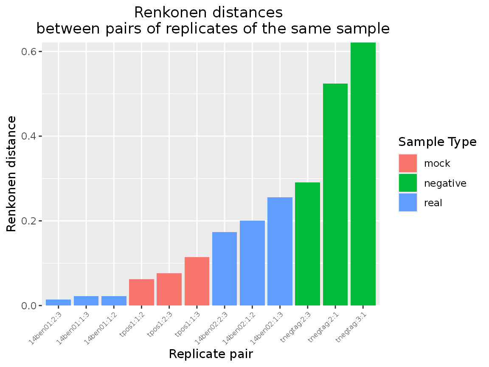
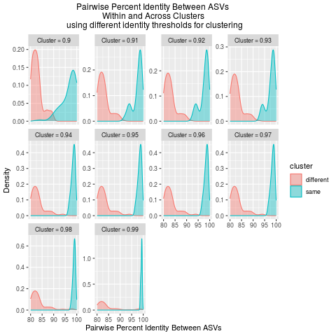
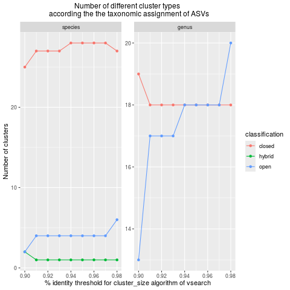

Tutorial - vtamR pipeline
Emese Meglécz
2026-09-18
Source:vignettes/tutorial-vtamr-pipeline.Rmd
tutorial-vtamr-pipeline.RmdSummary
vtamR is an advanced, R-based revision of VTAM (Validation and Taxonomic Assignment of Metabarcoding Data). It provides a comprehensive metabarcoding pipeline, enabling:
- End-to-End Sequence Analysis: Processes raw FASTQ files of amplicon sequences to generate a validated Amplicon Sequence Variant (ASV) table, with ASVs assigned to taxonomic groups.
- Replicate Handling: Supports technical or biological replicates of the same sample.
- Control-Based Filtering: Uses positive and negative control samples to refine filtering, minimizing both false positives and false negatives.
Novelties Compared to VTAM
-
Modular Design: As a series of R functions,
vtamRis highly adaptable, allowing users to include, exclude, or reorder analysis steps as needed. - More Flexible Preprocessing: Demultiplexing and subsampling of FASTA or FASTQ pairs.
- Denoising with SWARM: Incorporates SWARM for robust denoising of amplicon sequence variants (ASVs).
- Post-Processing of Swarms: Splits swarms among abundant ASVs to prevent pooling of highly similar yet distinct ASVs, preserving intra-specific variability.
- Visualization Tools: Offers graphic options to aid in data interpretation and decision-making.
- Filtering Statistics: Includes functions to generate statistics for each filtering step (e.g., read and variant counts).
-
ASV Clustering into mOTUs:
- Uses VSEARCH or SWARM to cluster ASVs into molecular operational taxonomic units (mOTUs).
- Provides visualization tools to help users select optimal clustering parameters.
- Simplified Workflow: The concepts of “marker” and “run” have been removed to streamline analyses.
- Detailed Log File: Records all major functions called, along with their parameters and runtimes.
- Summary Information: Facilitates publication of results (e.g., MIEM checklist).
-
Flexible Output: Formats output for direct use with
phyloseqorvegan.

Overview of the vtamR Workflow
Installation
Please, follow the Installation instructions.
Tutorial
This a detailed, tutorial. For impatient users, see the Short tutorial.
Before beginning your analysis, review the Tips – Good to Know section. This section highlights key features and options of
vtamR, helping you run the functions more effectively.
Set up
Set Paths to Third-Party Programs
R can execute external programs directly if their executables are available in your system’s PATH (see Installation).
If an executable is not in your PATH, you must tell R where to find it. There are two ways to do this.
The first option is to provide the path to the executable using the xxx_path (e.g. vsearch_path, cutadapt_path) argument of each function that calls an external program. Although this approach works, it can become tedious, especially when the same program is used in several functions.
A simpler approach is to set a package option for each executable. Once these options have been declared, usually at the beginning of your script, vtamR can use them automatically. You will then no longer need to provide the corresponding xxx_path argument in each function call.
For example:
options(vtamR.vsearch_path = "C:/Users/Public/vsearch-2.23.0-win-x86_64/bin/vsearch")
options(vtamR.blast_path = "C:/Users/Public/blast-2.16.0+/bin/blastn")
options(vtamR.cutadapt_path = "C:/Users/Public/cutadapt")
options(vtamR.swarm_path = "C:/Users/Public/swarm-3.1.5-win-x86_64/bin/swarm")
options(vtamR.pigz_path = "C:/Users/Public/pigz-win32/pigz")In this example, the paths are configured for Windows. Replace them with the actual locations of the programs on your computer. To configure these options, locate the vsearch.exe, blastn.exe, cutadapt.exe, swarm.exe, and pigz.exe files, and specify their paths without the .exe extension.
Input Data
Data Structure and Workflow
Dataset Composition
Sequences are typically derived from 96 samples, corresponding to a 96-well plate used for PCR amplification.
Each plate includes negative controls, mock samples, and biological samples. A single sequencing library is generated per replicate, with each library representing a set of 96 PCR reactions.
While vtamR can analyze datasets without controls or replicates, its full potential is realized when these features are utilized:
- Controls enable rigorous data filtering based on control sample content, reducing false positives and negatives.
- Replicates ensure reproducibility and minimize technical variability.
For projects exceeding 96 samples, analyses are conducted plate by plate.
- Consistent use of control samples ensures comparability across different libraries or time points (e.g., longitudinal studies tracking the same sites over time).
- Filtered datasets can be pooled using the
pool_dataset()function for integrated analysis.
Multi-Marker Analysis
vtamR supports the analysis of the same samples using multiple, strongly overlapping markers. For example, our dataset originates from a project Corse et al., 2017 utilizing two markers: MFZR and ZFZR.
Both markers target overlapping regions of the COI gene, where MFZR starts 18 nucleotides upstream of ZFZR.
Demo Dataset
The demo files provided in the vtamR package include:
- 2 real samples
- 1 mock sample
- 1 negative control
for each marker-plate combination. Due to the limited sample size, numerical values and graphs may not be highly informative.
Results from different marker-plate combinations are stored in separate directories, each maintaining the same structure and filenames. These data sets are processed independently using the same pipeline.
We will first analyze the first “plate” of the MFZR marker, then demonstrate how to pool results from different plates and markers.
Loading Data
To load the demo files included in vtamR, we will use the system.file() function. For your own datasets, specify the file and directory paths (e.g., ~/vtamR/fastq).
fastq_dir <- system.file("extdata/demo/fastq", package = "vtamR")
fastqinfo <- system.file("extdata/demo/fastqinfo_mfzr_plate1.csv", package = "vtamR")
mock_ncbi_fasta <- system.file("extdata/demo/mock_ncbi.fasta", package = "vtamR")
asv_list <- system.file("extdata/demo/asv_list.csv", package = "vtamR")-
fastq_dir: Directory containing the input FASTQ files. -
fastqinfo: CSV file with metadata for input files, including primers, tags, and sample information. -
mock_ncbi_fasta: FASTA file containing COI sequences of species present in the mock samples.- Note: These sequences may not be trimmed to the marker region and can slightly differ from the ASVs in the mock samples.
-
Purpose: Used to identify which ASVs correspond to expected species in the mock, facilitating the creation of a
mock_compositionfile that defines the expected content of mock samples.
-
asv_list: (Optional) CSV file containing ASVs andasv_ids from previous data sets.
Database for Taxonomic Assignment
To perform taxonomic assignment, set the path to:
- The database for taxonomic assignment (
blast_db). - The accompanying taxonomy file (
taxonomy).
For this example, we use a small demo database included in the vtamR package.
To obtain a full reference database (for real data), visit the TaxAssign Reference Database section.
When using your own data, provide the file names directly, without using the system.file() function.
taxonomy <- system.file("extdata/db_test/taxonomy_reduced.tsv", package = "vtamR")
blast_db <- system.file("extdata/db_test", package = "vtamR")
blast_db <- file.path(blast_db, "COInr_reduced")Check the Format of Input Files
The check_file_info() function:
- Verifies that all required columns are present in your input files.
- Performs sanity checks to detect potential errors.
It is optional, but useful, as user-generated files may contain subtle errors that are difficult to identify manually.
check_file_info(file = fastqinfo, dir = fastq_dir, file_type = "fastqinfo")
#> [1] "Sample names are alphanumerical : OK"
#> [1] "Only IUPAC characters in tag_fw: OK"
#> [1] "Only IUPAC characters in tag_rv: OK"
#> [1] "Only IUPAC characters in primer_fw: OK"
#> [1] "Only IUPAC characters in primer_rv: OK"
#> [1] "Coherence between samples and sample_type: OK"
#> [1] "Coherence between samples and habitat: OK"
#> [1] "sample_type: OK"
#> [1] "Coherence between samples and replicates: OK"
#> [1] "File extension: OK"
#> [1] "Coherence between fw and rv fastq filename: OK"
#> [1] "Unique tag combinations : OK"
check_file_info(file = asv_list, file_type = "asv_list")
#> [1] "Only IUPAC characters in ASV: OK"
#> [1] "1 to 1 relation between asv_id and asv : OK"Ouput
Output directory
Let’s set the output directory for plate 1 of MFZR.
outdir <- file.path("vtamR_demo_out", "mfzr_plate1")Set the log file
vtamR automatically generates a log file that records every major function called during an analysis. For each function call, the log includes:
- all arguments and their values, including default values that were not explicitly specified;
- the start and end time of the call; and
- the function’s runtime.
This log is extremely valuable for reproducibility. It lets you reconstruct exactly how an analysis was performed, even years later, even if the original script has been lost or modified. In effect, the log file is a complete record of your analysis workflow.
Two ways to set the log path
Just like for externam program paths, there are two ways to set the log path.
Option 1: Pass log_file to each function call. You can specify the path to the log file directly, using the log_file argument of each major vtamR function. This works, but it’s a bit laborious — it’s easy to forget the argument on some calls, or to accidentally use different filenames across calls, which leaves you with several files that each contain only part of the information.
Option 2: Set a package-level option once (recommended). A much simpler approach is to define the log path once, as a package option, at the start of your script. From then on, every logged function call is automatically appended to the same file — you don’t need to specify anything else. This does mean the log will accumulate every trial and attempt, which can get a bit messy, but you’ll always have the complete picture of what you did.
For all functions with a log_file argument, the log path is resolved in the following order of priority:
- the
log_fileargument, if it is provided in the function call; - the
vtamR.log_filepackage option, if it has been set; - a default file,
vtamR_log.csv, written to the working directory.
We strongly recommend using the package option, and that’s what we’ll do in this tutorial.
Define the path to the log file as a package option:
From this point on, every call to a vtamR function that supports logging will have its details appended to this file automatically.
A tip for finalized pipelines
Once your pipeline is finalized, consider archiving the log file from your testing phase, then running the final pipeline with a fresh log_file. This gives you a clean, complete record of the exact procedure and parameters used to produce your final results — long after the analysis is done. It’s also the input for the miem_bioinfo() function, which extracts information from the log file to help you prepare documentation for publication (e.g., a MIEM checklist).
Using the log file comes with only a minor requirements — well worth the benefit of fully reproducible analyses:
Always name arguments explicitly when calling a function — for example, use my_function(input = my_file) rather than relying on positional matching (my_function(my_file)).
Pre-process reads
Your FASTQ files may vary depending on your laboratory and sequencing setup. They may include:
- Multiple sample replicates
- Tags for demultiplexing
- Primer sequences
The pre-processing steps applied to the reads, as well as their order, may also vary depending on your experimental design.
See From FASTQ to data frame for examples of how to handle different experimental designs and how to change the order of merging and demultiplexing steps.
Count reads in input FASTQ files
Let’s count the number of input sequences in each input FASTQ file pair.
In the following count_reads_batch() function
- The files listed in the
fastq_fwcolumn offastqinfoare examined. fastqinfo can be either a CSV file or a data frame containing information about the input files, primers, tags, samples, and other experimental metadata. - The input FASTQ files are located in
dir. - The updated
fastqinfotable, completed with the read count for each input file pair, is written tooutfile. - The function returns the
fastqinfodata frame completed by read counts.
For more information, see ?count_reads_batch.
fastqinfo_rc_file <- file.path(outdir, "fastqinfo_rc.csv")
fastqinfo_rc <- count_reads_batch(
info = fastqinfo,
dir = fastq_dir, # directory of input fastq files
outfile = fastqinfo_rc_file # file path for the updated fastqinfo
)
knitr::kable(select(fastqinfo_rc, sample, fastq_fw, read_count), format = "markdown")| sample | fastq_fw | read_count |
|---|---|---|
| tpos1 | mfzr_1_fw.fastq.gz | 37351 |
| tnegtag | mfzr_1_fw.fastq.gz | 37351 |
| 14ben01 | mfzr_1_fw.fastq.gz | 37351 |
| 14ben02 | mfzr_1_fw.fastq.gz | 37351 |
| tpos1 | mfzr_2_fw.fastq.gz | 40359 |
| tnegtag | mfzr_2_fw.fastq.gz | 40359 |
| 14ben01 | mfzr_2_fw.fastq.gz | 40359 |
| 14ben02 | mfzr_2_fw.fastq.gz | 40359 |
| tpos1 | mfzr_3_fw.fastq.gz | 46796 |
| tnegtag | mfzr_3_fw.fastq.gz | 46796 |
| 14ben01 | mfzr_3_fw.fastq.gz | 46796 |
| 14ben02 | mfzr_3_fw.fastq.gz | 46796 |
Randomly subsample sequencing reads
This step can be useful for balancing read counts across your sequencing libraries. It is optional, but may help ensure that replicates have similar numbers of reads.
The random_sample_batch function allows you to randomly subsample reads from FASTA files or FASTQ file pairs listed in a CSV file or data frame, such as your fastqinfo_rc data frame.
You can choose to sample:
- A fixed number of sequences from each file (
n) - A proportion of sequences from each file (
p) - A total number of sequences across all files (
N), while preserving the relative read counts among files
Here, we select n sequences from each FASTQ file in the info data frame.
In this example, the three replicates have comparable numbers of reads. However, in more contrasted cases, it can be useful to randomly subsample files that contain substantially more reads than the others.
For demonstration purposes, we will randomly select 40,000 read pairs from replicates 2 and 3. Replicate 1 contains fewer reads, so its FASTQ files will simply be copied to the output directory without subsampling.
compress = FALSE: In this tutorial, we’ll work with uncompressed files. For guidance on whether to compress your files, see the To Compress or Not to Compress section.
Important: It is also possible to subsample files after demultiplexing. However, this will alter the relative read counts of the samples, which is important for some of the filters applied in subsequent steps. For example, negative controls are expected to contain relatively few reads. If you prefer sunsampling after demultiplexing check_out the short tutorial and the
random_sample_batch_by()function.
For more information, see ?random_sample_batch.
random_sample_dir <- file.path(outdir, "1_random_sampled_fastq")
fastqinfo_subsampled <- random_sample_batch(
info = fastqinfo_rc, # output of count_reads_batch
dir = fastq_dir, # directory of input fastq files
outdir = random_sample_dir, # file path for the updated fastqinfo_rc
compress = FALSE,
n = 4e4
)
#> Warning in random_sample_fastq(fastq1 = file.path(dir, files[i, "fastq_fw"]), : /tmp/Rtmp1k1Qfl/temp_libpathe1012891df1/vtamR/extdata/demo/fastq/mfzr_1_fw.fastq.gz contains 37351 records. Input file pair is copied to output.Demultiplex
- The FASTQ file pairs listed in fastqinfo are demultiplexed, and tags and adapters are trimmed from the reads.
fastqinfocan be either a CSV file or a data frame containing information about the input files, primers, tags, samples, and other experimental metadata. - Setting
primer_to_end = FALSEallows the primer to occur somewhere within the read rather than requiring it to start at the very beginning of the read after tag trimming. -
check_reverse == TRUEallows to check reverse-complemented sequences as well.
demultiplexed_dir <- file.path(outdir, "2_demultiplexed_fastq")
fastqinfo_delultiplexed <- demultiplex_and_trim_fastq(
fastqinfo = fastqinfo_subsampled,
fastq_dir = random_sample_dir, # directory of input fastq files
outdir = demultiplexed_dir, # directory of output fastq files
primer_to_end = FALSE,
check_reverse = TRUE,
compress = FALSE
)Merge Fastq Pairs and Quality Filter
The merge_fastq_pairs function combines each read-pair into a single sequence in fasta format and can also handle quality filtering.
For additional quality filtering options, check out ?merge_fastq_pairs.
fastainfo_df is the output of merge_fastq_pairs. It’s an updated version of fastqinfo, where FASTQ filenames are replaced with FASTA filenames, and read counts are included or updated for each file. This data frame is written also to a CSV file in the outdir.
merged_dir <- file.path(outdir, "3_merged")
sampleinfo_df <- merge_fastq_pairs(
fastqinfo = fastqinfo_delultiplexed,
fastq_dir = demultiplexed_dir, # directory of input fastq files
outdir = merged_dir, # directory of output fasta files
fastq_maxee = 1, # Maximum Expected Error for each read
fastq_maxns = 0, # no Ns in output
compress = FALSE,
fastq_allowmergestagger = T # reads might be longer than the marker
)Important: Managing Large Files Once your analysis is complete, you might want to compress or delete large intermediate files. For tips on this, see Files to Keep.
Dereplicate
At this stage, you should have one FASTA file per sample-replicate, containing merged reads with tags and primers already removed.
The next step is to dereplicate these files. This means grouping identical sequences together so that each unique sequence (an ASV) is assigned a unique numerical ID (an asv_id).
Output
The output is a data frame called read_count_df, which can also be saved as a CSV file if you provide the outfile argument. Saving this file is strongly recommended — it becomes your starting point for filtering. This way, you can try different filtering strategies without having to re-run the more time-consuming pre-processing steps.
ASV Identifiers
If you want to keep ASV IDs consistent with a previous analysis, you can provide a reference file (asv_list) containing existing ASVs and their IDs. The updated and complete list of ASVs will then be written to output_asv_list.
If you only provide output_asv_list (without an input_asv_list), the function will simply write out the full list of current ASVs with their assigned IDs. This is useful if you plan to analyze additional datasets later and want to keep ASV IDs consistent across studies.
outfile <- file.path(outdir, "4_filter", "1_before_filter.csv")
updated_asv_list <- file.path(outdir, "ASV_list_with_IDs.csv")
read_count_df <- dereplicate(
sampleinfo = sampleinfo_df, # input df (output of demultiplex_and_trim_fasta)
dir = merged_dir, # directory with input fasta files
outfile = outfile, # write the output data frame to this file
input_asv_list = asv_list,
output_asv_list = updated_asv_list
)Filtering
vtamR provides many functions to filter out ASVs or ASV occurrences within a sample-replicate that may result from technical or biological issues in metabarcoding.
There are two main ways to apply these filters:
- You can apply them independently to the original dataset and then combine the results using the
pool_filtersfunction. In this case, only occurrences that pass all filters are kept. - Or you can apply them sequentially, one after the other, in any order that fits your analysis.
In this section, I’ll show an example that uses several filtering options. However, you are encouraged to build your own pipeline based on your specific needs.
Output data frame and CSV
Each filtering function returns a data frame with the filtered results. You can also save the output as a CSV file using the outfile argument. This is especially useful if you want to track how ASVs or samples are retained or removed throughout the analysis, using the history_by and summarize_by functions.
To keep things organized, I recommend starting output file names with a number to reflect the order of the steps. This also allows the summarize_by function to easily generate summary statistics at each stage of the analysis.
Tracking the Evolution of Reads and ASVs (stat_df)
You can monitor changes in the number of reads and ASVs after each filtering step using the get_stat function. This function either:
- Creates a new data frame with read and ASV counts, or
- Appends a new row to an existing data frame provided as an argument (
stat_df).
The resulting data frame contains the following columns:
-
parameters: Parameters used for the analysis -
asv_count: Number of ASVs detected -
read_count: Total number of reads -
sample_count: Number of samples analyzed -
sample_replicate_count: Number of replicates per sample
Each row summarizes the results of a single filtering step. By calling get_stat after each step, you can incrementally build a data frame with key summary statistics for every stage of your analysis.
The main arguments
-
params: A string describing the key parameters applied during the filtering step. -
stage: A string indicating the analysis stage (e.g., “input”, “denoising”, “filtering”) to which the statistics correspond.
stat_df <- get_stat(read_count_df, stat_df = NULL, stage = "input", params = NA)Let’s check number od reads, ASV, samples in the initial non-filtereg dataset.
knitr::kable(stat_df, format = "markdown")| parameters | asv_count | read_count | sample_count | sample_replicate_count | |
|---|---|---|---|---|---|
| input | NA | 9947 | 115770 | 4 | 12 |
Denoising with SWARM
In metabarcoding datasets, sequencing errors often produce many low-frequency ASVs that do not reflect real biological sequences. A common way to reduce this noise is to use SWARM (Mahé et al., 2015), a fast and widely used algorithm that groups highly similar ASVs together.
Running SWARM in vtamR
You can run SWARM directly with the denoise_by_swarm() function.
Since the goal here is denoising (and not clustering into mOTUs), the recommended settings are:
-
swarm_d = 1: allows only one difference between ASVs -
fastidious = TRUE: adds a second pass to refine clusters and reduce small ones
These settings are designed to remove sequencing errors while preserving real biological variation.
Whole Dataset vs. Sample-by-Sample Clustering**
There are two ways to apply SWARM:
by_sample = FALSE(default): SWARM is applied to the entire data set. This approach is more aggressive and efficiently reduces the total number of ASVs.by_sample = TRUE: SWARM is applied separately to each sample. This is more conservative and helps preserve biological variation.
If you are interested in intra-specific variation, it is generally better to use by_sample = TRUE, as very similar but real ASVs in different samples might otherwise be merged.
Refining Clusters With split_clusters
Even with d = 1 and fastidious = TRUE, SWARM may still group ASVs that differ by only one nucleotide but have similar read abundances. This can lead to real biological variants being merged into a single cluster.
To address this, denoise_by_swarm() includes an optional post-processing step with split_clusters = TRUE. This step attempts to recover meaningful variants that may have been incorrectly merged.
For each cluster:
-
ASVs are evaluated based on two criteria:
- their read count relative to the cluster centroid (
min_abundance_ratio) - a minimum absolute read count (
min_read_count)
- their read count relative to the cluster centroid (
ASVs that meet both criteria are considered biologically meaningful, and each forms a new cluster
The total reads from the original cluster are then redistributed among these ASVs, while keeping their original proportions.
If no ASV meets the criteria, the cluster remains unchanged (all reads are pooled together).
The split_clusters option should be used with the following settings:
by_sample = TRUE-
swarm_d = 1(default) -
fastidious = TRUE(default)
split_clusters <- TRUE
by_sample <- TRUE
outfile <- file.path(outdir, "4_filter", "2_swarm_denoise.csv")
read_count_df <- denoise_by_swarm(
read_count = read_count_df,
outfile=outfile,
by_sample=by_sample,
split_clusters=split_clusters,
quiet=TRUE
)
param <- paste("by_sample:", by_sample, "split_clusters:", split_clusters, sep=" ")
stat_df <- get_stat(read_count_df, stat_df, stage="swarm_denoise", params=param)Let’s check the reduction of the number of variants after running swarm.
knitr::kable(stat_df, format = "markdown")| parameters | asv_count | read_count | sample_count | sample_replicate_count | |
|---|---|---|---|---|---|
| input | NA | 9947 | 115770 | 4 | 12 |
| swarm_denoise | by_sample: TRUE split_clusters: TRUE | 1102 | 115768 | 4 | 12 |
The small variation in the total number of reads comes from rounding when redistributing reads among clusters that have been split.
Filter out ASVs with Low Total Read Count (filter_asv_global)
Although SWARM has already reduced the number of ASVs considerably, many ASVs with low read counts may still remain.
The filter_asv_global function removes all ASVs whose total read count is below a chosen threshold.
Here, we will eliminate singletons and observe how the number of ASVs and total reads changes after this step.
global_read_count_cutoff = 2
outfile <- file.path(outdir, "4_filter", "3_filter_asv_global.csv")
read_count_df <- filter_asv_global(
read_count = read_count_df,
outfile = outfile,
cutoff = global_read_count_cutoff
)
param <- paste("global_read_count_cutoff:", global_read_count_cutoff, sep=" ")
stat_df <- get_stat(read_count_df, stat_df, stage="filter_asv_global", params=param)
knitr::kable(stat_df, format = "markdown")| parameters | asv_count | read_count | sample_count | sample_replicate_count | |
|---|---|---|---|---|---|
| input | NA | 9947 | 115770 | 4 | 12 |
| swarm_denoise | by_sample: TRUE split_clusters: TRUE | 1102 | 115768 | 4 | 12 |
| filter_asv_global | global_read_count_cutoff: 2 | 201 | 114867 | 4 | 12 |
Filter ASVs Based on Read Length (filter_indel)
This filter is only applicable to coding sequences.
The idea is simple: if the length of an ASV differs from the most common ASV length by a value that is not a multiple of 3, it is likely to be an erroneous sequence or a pseudogene.
outfile <- file.path(outdir, "4_filter", "4_filter_indel.csv")
read_count_df <- filter_indel(
read_count = read_count_df,
outfile = outfile
)
stat_df <- get_stat(read_count_df, stat_df, stage="filter_indel", params=NA)
knitr::kable(stat_df, format = "markdown")| parameters | asv_count | read_count | sample_count | sample_replicate_count | |
|---|---|---|---|---|---|
| input | NA | 9947 | 115770 | 4 | 12 |
| swarm_denoise | by_sample: TRUE split_clusters: TRUE | 1102 | 115768 | 4 | 12 |
| filter_asv_global | global_read_count_cutoff: 2 | 201 | 114867 | 4 | 12 |
| filter_indel | NA | 189 | 114708 | 4 | 12 |
Filter ASVs with Stop Codons (filter_stop_codon)
This filter is only applicable to coding sequences.
It checks for the presence of STOP codons in all three possible reading frames and removes ASVs that contain STOP codons in each of them.
You can specify the genetic code using its numerical ID from NCBI. By default, the function uses the invertebrate mitochondrial genetic code (code 5), as its STOP codons are also valid STOP codons in most other genetic codes.
outfile <- file.path(outdir, "4_filter", "5_filter_stop_codon.csv")
genetic_code = 5
read_count_df <- filter_stop_codon(
read_count = read_count_df,
genetic_code = genetic_code,
outfile = outfile
)
param <- paste("genetic_code:", genetic_code, sep=" ")
stat_df <- get_stat(read_count_df, stat_df, stage="filter_stop_codon", params=param)
knitr::kable(stat_df, format = "markdown")| parameters | asv_count | read_count | sample_count | sample_replicate_count | |
|---|---|---|---|---|---|
| input | NA | 9947 | 115770 | 4 | 12 |
| swarm_denoise | by_sample: TRUE split_clusters: TRUE | 1102 | 115768 | 4 | 12 |
| filter_asv_global | global_read_count_cutoff: 2 | 201 | 114867 | 4 | 12 |
| filter_indel | NA | 189 | 114708 | 4 | 12 |
| filter_stop_codon | genetic_code: 5 | 189 | 114708 | 4 | 12 |
Filter Potential Contaminant ASVs (filter_contaminant)
This filter detects ASVs whose read counts are higher in at least one negative control than in any real sample. These ASVs are considered potential contaminants and are removed from the dataset.
The conta_file records the data for the ASVs that were removed. It’s a good idea to check this file to make sure nothing unusual is happening.
In our case, 8 ASVs were removed. However, each of them had only a few reads, suggesting this was likely just random low-frequency noise rather than true contamination.
outfile <- file.path(outdir, "4_filter", "6_filter_contaminant.csv")
conta_file <- file.path(outdir, "4_filter", "potential_contaminants.csv")
read_count_df <- filter_contaminant(
read_count = read_count_df,
sampleinfo = sampleinfo_df,
conta_file = conta_file,
outfile = outfile
)
stat_df <- get_stat(read_count_df, stat_df, stage="filter_contaminant", params=NA)
knitr::kable(stat_df, format = "markdown")| parameters | asv_count | read_count | sample_count | sample_replicate_count | |
|---|---|---|---|---|---|
| input | NA | 9947 | 115770 | 4 | 12 |
| swarm_denoise | by_sample: TRUE split_clusters: TRUE | 1102 | 115768 | 4 | 12 |
| filter_asv_global | global_read_count_cutoff: 2 | 201 | 114867 | 4 | 12 |
| filter_indel | NA | 189 | 114708 | 4 | 12 |
| filter_stop_codon | genetic_code: 5 | 189 | 114708 | 4 | 12 |
| filter_contaminant | NA | 173 | 114597 | 4 | 12 |
Filter Chimeric ASVs (filter_chimera)
This function uses the uchime3_denovo algorithm implemented in VSEARCH to detect chimeras.
- If
by_sample = FALSE(default), ASVs identified as chimeras across the whole dataset are removed. - If
by_sample = TRUE, an ASV is removed only if it is detected as a chimera in at least a proportion of samples defined bysample_prop.
The abskew parameter sets the minimum frequency difference: a chimera must be at least abskew times less abundant than its parental ASVs to be flagged.
outfile <- file.path(outdir, "4_filter", "7_filter_chimera.csv")
abskew=2
by_sample = TRUE
sample_prop = 0.8
read_count_df <- filter_chimera(
read_count = read_count_df,
outfile = outfile,
by_sample = by_sample,
sample_prop = sample_prop,
abskew = abskew
)
param <- paste("by_sample:", by_sample, "sample_prop:", sample_prop, "abskew:", abskew, sep=" ")
stat_df <- get_stat(read_count_df, stat_df, stage="filter_chimera", params=param)
knitr::kable(stat_df, format = "markdown")| parameters | asv_count | read_count | sample_count | sample_replicate_count | |
|---|---|---|---|---|---|
| input | NA | 9947 | 115770 | 4 | 12 |
| swarm_denoise | by_sample: TRUE split_clusters: TRUE | 1102 | 115768 | 4 | 12 |
| filter_asv_global | global_read_count_cutoff: 2 | 201 | 114867 | 4 | 12 |
| filter_indel | NA | 189 | 114708 | 4 | 12 |
| filter_stop_codon | genetic_code: 5 | 189 | 114708 | 4 | 12 |
| filter_contaminant | NA | 173 | 114597 | 4 | 12 |
| filter_chimera | by_sample: TRUE sample_prop: 0.8 abskew: 2 | 140 | 114050 | 4 | 12 |
Filter Aberrant Replicates (filter_replicate)
This filter removes replicates that are very different from other replicates of the same sample.
To do this, we calculate the Renkonen distances between all pairs of replicates within each sample and identify those that deviate significantly from the others.
renkonen_within_df <- compute_renkonen_distances(
read_count = read_count_df,
compare_all = FALSE)Visualize Renkonen Distances
We can create a density plot of the Renkonen distances to see how similar replicates are within each sample.
Note: This example uses a very small test dataset, so your own data will likely produce a different-looking graph.
plot_renkonen_distance_density(
df = renkonen_within_df) We can also create a barplot of the Renkonen distances, using different colors to represent sample types (real, mock, or negative).
We can also create a barplot of the Renkonen distances, using different colors to represent sample types (real, mock, or negative).
Notes:
-
sampleinfo_dfmust havesampleandsample_typecolumns, but any data frame with these columns will work. - If
sampleinfo_dfis not in your environment, you can use the sampleinfo.csv instead of the data frame. This files was produced bydemultiplex_and_trim_fastain this pipeline and found in the vtamR_demo_out/mfzr_plate1/3_demultiplexed folder. - This is a very small test data set, so your own data will likely produce a different-looking graph.
plot_renkonen_distance_barplot(
df = renkonen_within_df,
sampleinfo = sampleinfo_df,
x_axis_label_size = 6
)
Determine Cutoff for Replicate Filtering
In this example, there are only a few Renkonen distance values, so the density plot isn’t very informative. The barplot, however, shows that replicate 1 of the tnegtag sample (a negative control) is substantially different from the other two replicates. Setting cutoff = 0.4 would be a reasonable choice for the filter_replicate function.
The filter_replicate function removes replicates whose Renkonen distances exceed the cutoff relative to most other replicates of the same sample. Here, this means that replicate 1 of tnegtag will be removed.
An alternative way to define the cutoff is to use the renkonen_distance_quantile parameter instead of a fixed cutoff. This automatically sets the cutoff based on a chosen quantile of the within-sample distance distribution. For example:
-
renkonen_distance_quantile = 0.9sets the cutoff at the 90th percentile of distances, i.e., between the 9th and 10th decile.
In this tutorial, we will use the quantile-based option to determine the cutoff.
outfile <- file.path(outdir, "4_filter", "8_filter_replicate.csv")
renkonen_distance_quantile <- 0.9
read_count_df <- filter_replicate(
read_count = read_count_df,
outfile = outfile,
renkonen_distance_quantile = renkonen_distance_quantile
)
#> [1] "The cutoff value for Renkonen distances is 0.291060291060291"
param <- paste("renkonen_distance_quantile:", renkonen_distance_quantile, sep=" ")
stat_df <- get_stat(read_count_df, stat_df, stage="filter_replicate", params=param)
knitr::kable(stat_df, format = "markdown")| parameters | asv_count | read_count | sample_count | sample_replicate_count | |
|---|---|---|---|---|---|
| input | NA | 9947 | 115770 | 4 | 12 |
| swarm_denoise | by_sample: TRUE split_clusters: TRUE | 1102 | 115768 | 4 | 12 |
| filter_asv_global | global_read_count_cutoff: 2 | 201 | 114867 | 4 | 12 |
| filter_indel | NA | 189 | 114708 | 4 | 12 |
| filter_stop_codon | genetic_code: 5 | 189 | 114708 | 4 | 12 |
| filter_contaminant | NA | 173 | 114597 | 4 | 12 |
| filter_chimera | by_sample: TRUE sample_prop: 0.8 abskew: 2 | 140 | 114050 | 4 | 12 |
| filter_replicate | renkonen_distance_quantile: 0.9 | 140 | 114023 | 4 | 11 |
Using renkonen_distance_quantile <- 0.9 sets the cutoff at 0.289 (as indicated by the function output: "The cutoff value for Renkonen distances is 0.289308176100629). While this value is slightly lower than the 0.4 threshold chosen through graphical inspection, both cutoffs yield the same result: the exclusion of replicate 1 from the tentative control.
You can use the renkonen_distance_quantile argument if the density plot is difficult to interpret or if you prefer to automate the pipeline and avoid manually selecting the cutoff for the filter_replicate function.
Create mock_composition File
The mock_composition file is needed to suggest parameter values for some filtering steps. It should list the expected ASVs in each mock sample.
If you don’t know the exact sequences of the species in your mock samples, see How to make a mock_composition file for guidance.
Here’s a quick example of how to create it. After generating the file, check mock_composition_template_to_check.csv to make sure all ASVs have been correctly identified.
outdir_mock <- file.path(outdir, "mock_composition")
mock_template <- match_variants_to_mock_species(
read_count = read_count_df,
fas = mock_ncbi_fasta, # fasta with reference sequences on the mock or closely related species
taxonomy = taxonomy,
sampleinfo = sampleinfo_df,
outdir = outdir_mock
)
mock_composition <- file.path(outdir_mock, "mock_composition_template_to_check.csv")
mock_composition_df <- read.csv(mock_composition)
knitr::kable(mock_composition_df, format = "markdown")| sample | action | asv | taxon | asv_id |
|---|---|---|---|---|
| tpos1 | keep | TCTATATTTCATTTTTGGTGCTTGGGCAGGTATGGTAGGTACCTCATTAAGACTTTTAATTCGAGCCGAGTTGGGTAACCCGGGTTCATTAATTGGGGACGATCAAATTTATAACGTAATCGTAACTGCTCATGCCTTTATTATGATTTTTTTTATAGTGATACCTATTATAATT | Baetis rhodani | 5 |
| tpos1 | keep | ACTATATTTTATTTTTGGGGCTTGATCCGGAATGCTGGGCACCTCTCTAAGCCTTCTAATTCGTGCCGAGCTGGGGCACCCGGGTTCTTTAATTGGCGACGATCAAATTTACAATGTAATCGTCACAGCCCATGCTTTTATTATGATTTTTTTCATGGTTATGCCTATTATAATC | Caenis pusilla | 1 |
| tpos1 | keep | CCTTTATTTTATTTTCGGTATCTGATCAGGTCTCGTAGGATCATCACTTAGATTTATTATTCGAATAGAATTAAGAACTCCTGGTAGATTTATTGGCAACGACCAAATTTATAACGTAATTGTTACATCTCATGCATTTATTATAATTTTTTTTATAGTTATACCAATCATAATT | Hydropsyche pellucidula | 3 |
| tpos1 | keep | CCTTTATCTTGTATTTGGTGCCTGGGCCGGAATGGTAGGGACCGCCCTAAGCCTTCTTATTCGGGCCGAACTAAGCCAGCCTGGCTCGCTATTAGGTGATAGCCAAATTTATAATGTTATTGTTACCGCCCACGCCTTCGTAATAATTTTCTTTATAGTCATGCCAATTCTCATT | Phoxinus phoxinus | 6 |
| tpos1 | keep | ACTTTATTTTATTTTTGGTGCTTGATCAGGAATAGTAGGAACTTCTTTAAGAATTCTAATTCGAGCTGAATTAGGTCATGCCGGTTCATTAATTGGAGATGATCAAATTTATAATGTAATTGTAACTGCTCATGCTTTTGTAATAATTTTCTTTATAGTTATACCTATTTTAATT | Rheocricotopus chalybeatus | 2 |
| tpos1 | keep | CTTATATTTTATTTTTGGTGCTTGATCAGGGATAGTGGGAACTTCTTTAAGAATTCTTATTCGAGCTGAACTTGGTCATGCGGGATCTTTAATCGGAGACGATCAAATTTACAATGTAATTGTTACTGCACACGCCTTTGTAATAATTTTTTTTATAGTTATACCTATTTTAATT | Synorthocladius semivirens | 4 |
Filter Low-Abundance Occurrences within Samples (filter_occurrence_sample)
The filter_occurrence_sample function removes ASV occurrences with very low read counts relative to the total reads in a sample-replicate. The default cutoff proportion is 0.001.
To choose a suitable cutoff, you can examine the proportions of expected ASVs in your mock samples using the suggest_sample_cutoff function. This ensures that real, low-abundance ASVs are not accidentally removed by setting the cutoff below the lowest observed proportion.
Suggest Filter Parameters Based on Mock Sample (suggest_sample_cutoff)
Note: If you don’t yet know the exact sequences in your mock samples and therefore don’t have a mock_composition file, see How to make a mock_composition file for guidance.
outfile = file.path(outdir, "4_filter", "suggest_parameters", "sample_cutoff.csv")
suggest_sample_cutoff_df <- suggest_sample_cutoff(
read_count = read_count_df,
mock_composition = mock_composition,
outfile = outfile
)
knitr::kable(head(suggest_sample_cutoff_df), format = "markdown")| sample | replicate | action | asv_id | sample_cutoff | read_count | read_count_sample_replicate | asv | taxon |
|---|---|---|---|---|---|---|---|---|
| tpos1 | 3 | keep | 1 | 0.0047 | 96 | 20297 | ACTATATTTTATTTTTGGGGCTTGATCCGGAATGCTGGGCACCTCTCTAAGCCTTCTAATTCGTGCCGAGCTGGGGCACCCGGGTTCTTTAATTGGCGACGATCAAATTTACAATGTAATCGTCACAGCCCATGCTTTTATTATGATTTTTTTCATGGTTATGCCTATTATAATC | Caenis pusilla |
| tpos1 | 1 | keep | 6 | 0.0084 | 184 | 21693 | CCTTTATCTTGTATTTGGTGCCTGGGCCGGAATGGTAGGGACCGCCCTAAGCCTTCTTATTCGGGCCGAACTAAGCCAGCCTGGCTCGCTATTAGGTGATAGCCAAATTTATAATGTTATTGTTACCGCCCACGCCTTCGTAATAATTTTCTTTATAGTCATGCCAATTCTCATT | Phoxinus phoxinus |
| tpos1 | 2 | keep | 6 | 0.0088 | 239 | 27116 | CCTTTATCTTGTATTTGGTGCCTGGGCCGGAATGGTAGGGACCGCCCTAAGCCTTCTTATTCGGGCCGAACTAAGCCAGCCTGGCTCGCTATTAGGTGATAGCCAAATTTATAATGTTATTGTTACCGCCCACGCCTTCGTAATAATTTTCTTTATAGTCATGCCAATTCTCATT | Phoxinus phoxinus |
| tpos1 | 2 | keep | 1 | 0.0090 | 245 | 27116 | ACTATATTTTATTTTTGGGGCTTGATCCGGAATGCTGGGCACCTCTCTAAGCCTTCTAATTCGTGCCGAGCTGGGGCACCCGGGTTCTTTAATTGGCGACGATCAAATTTACAATGTAATCGTCACAGCCCATGCTTTTATTATGATTTTTTTCATGGTTATGCCTATTATAATC | Caenis pusilla |
| tpos1 | 3 | keep | 6 | 0.0091 | 185 | 20297 | CCTTTATCTTGTATTTGGTGCCTGGGCCGGAATGGTAGGGACCGCCCTAAGCCTTCTTATTCGGGCCGAACTAAGCCAGCCTGGCTCGCTATTAGGTGATAGCCAAATTTATAATGTTATTGTTACCGCCCACGCCTTCGTAATAATTTTCTTTATAGTCATGCCAATTCTCATT | Phoxinus phoxinus |
| tpos1 | 2 | keep | 4 | 0.0118 | 321 | 27116 | CTTATATTTTATTTTTGGTGCTTGATCAGGGATAGTGGGAACTTCTTTAAGAATTCTTATTCGAGCTGAACTTGGTCATGCGGGATCTTTAATCGGAGACGATCAAATTTACAATGTAATTGTTACTGCACACGCCTTTGTAATAATTTTTTTTATAGTTATACCTATTTTAATT | Synorthocladius semivirens |
Choose a Cutoff for filter_occurrence_sample
The rows in suggest_sample_cutoff_df are sorted by the sample_cutoff column in increasing order.
- The lowest proportion of reads for an expected ASV in a sample-replicate is 0.0047 (for Caenis pusilla, replicate 3 of the
tpos1mock sample). - Setting the
filter_occurrence_samplecutoff higher than this would remove some expected ASVs, creating false negatives. - Therefore, we choose a cutoff of 0.004.
Note:
- If all species in the mock community amplify equally well, the minimum
sample_cutoffmay be relatively high. In such cases, it’s often safer to choose a low arbitrary value (e.g., 0.001–0.005). - The optimal threshold depends on your environmental sample complexity: the more taxa you expect, the lower the cutoff should be.
In practice, strong PCR amplification bias is common, so scenarios where all mock species amplify equally well are rare.
When designing mock communities for a metabarcoding experiment, it’s recommended to include some species known to amplify poorly. This requires pre-testing and optimization, but ensures that your mock sample realistically reflects amplification biases before analyzing your actual environmental samples.
Filter Low-Abundance Occurrences within Samples
sample_cutoff <- 0.004
outfile <- file.path(outdir, "4_filter", "9_filter_occurrence_sample.csv")
read_count_df <- filter_occurrence_sample(
read_count = read_count_df,
cutoff = sample_cutoff,
outfile = outfile
)
param <- paste("cutoff:", sample_cutoff, sep=" ")
stat_df <- get_stat(read_count_df, stat_df, stage="filter_occurrence_sample", params=param)
knitr::kable(stat_df, format = "markdown")| parameters | asv_count | read_count | sample_count | sample_replicate_count | |
|---|---|---|---|---|---|
| input | NA | 9947 | 115770 | 4 | 12 |
| swarm_denoise | by_sample: TRUE split_clusters: TRUE | 1102 | 115768 | 4 | 12 |
| filter_asv_global | global_read_count_cutoff: 2 | 201 | 114867 | 4 | 12 |
| filter_indel | NA | 189 | 114708 | 4 | 12 |
| filter_stop_codon | genetic_code: 5 | 189 | 114708 | 4 | 12 |
| filter_contaminant | NA | 173 | 114597 | 4 | 12 |
| filter_chimera | by_sample: TRUE sample_prop: 0.8 abskew: 2 | 140 | 114050 | 4 | 12 |
| filter_replicate | renkonen_distance_quantile: 0.9 | 140 | 114023 | 4 | 11 |
| filter_occurrence_sample | cutoff: 0.004 | 51 | 112298 | 4 | 11 |
Filter Occurrences by Replicate Consistency (filter_min_replicate-1)
To improve repeatability, occurrences are kept only if they are present in at least min_replicate_number replicates of the same sample (2 by default).
min_replicate_number <- 2
outfile <- file.path(outdir, "4_filter", "10_filter_min_replicate.csv")
read_count_df <- filter_min_replicate(
read_count = read_count_df,
cutoff = min_replicate_number,
outfile = outfile
)
param <- paste("cutoff:", min_replicate_number, sep=" ")
stat_df <- get_stat(read_count_df, stat_df, stage="filter_min_replicate", params=param)
knitr::kable(stat_df, format = "markdown")| parameters | asv_count | read_count | sample_count | sample_replicate_count | |
|---|---|---|---|---|---|
| input | NA | 9947 | 115770 | 4 | 12 |
| swarm_denoise | by_sample: TRUE split_clusters: TRUE | 1102 | 115768 | 4 | 12 |
| filter_asv_global | global_read_count_cutoff: 2 | 201 | 114867 | 4 | 12 |
| filter_indel | NA | 189 | 114708 | 4 | 12 |
| filter_stop_codon | genetic_code: 5 | 189 | 114708 | 4 | 12 |
| filter_contaminant | NA | 173 | 114597 | 4 | 12 |
| filter_chimera | by_sample: TRUE sample_prop: 0.8 abskew: 2 | 140 | 114050 | 4 | 12 |
| filter_replicate | renkonen_distance_quantile: 0.9 | 140 | 114023 | 4 | 11 |
| filter_occurrence_sample | cutoff: 0.004 | 51 | 112298 | 4 | 11 |
| filter_min_replicate | cutoff: 2 | 31 | 110974 | 4 | 11 |
Filter Low-Abundance Occurrences (filter_occurrence_variant and filter_occurrence_read_count)
The filter_occurrence_variant function removes occurrences with low read counts relative to the total reads of their ASV. By default, the cutoff proportion is 0.001. This filter is mainly designed to remove spurious detections caused by tag-jumps or minor cross-sample contamination.
The filter_occurrence_read_count function, in contrast, removes occurrences based on an absolute read count threshold, set to 10 by default.
Choose a Cutoff for (filter_occurrence_variant and filter_occurrence_read_count)
The suggest_variant_readcount_cutoffs function helps you find suitable cutoff values for both filters. It tests different combinations and evaluates the number of:
To run this optimization, you need a known_occurrences_df data frame that lists true positive (TP) and false positive (FP) occurrences in control samples and in some cases in real samples (identified due to incompatible habitat).
How to Obtain known_occurrences_df
There are two options:
1. Full control
You can create it manually using the classify_control_occurrences function. You can then review or edit the resulting known_occurrences_df before using it as input for suggest_variant_readcount_cutoffs.
2. Automatic generation
Alternatively, you can run suggest_variant_readcount_cutoffs with known_occurrences = NULL (default), and provide:
mock_compositionsampleinfo-
habitat_proportion(optional; seeclassify_control_occurrences
In this case, the function will automatically call classify_control_occurrences and use its output to estimate optimal cutoff values.
All generated data frames are saved as CSV files in the specified outdir.
Understanding The Output
The main result is a data frame that summarizes the performance of each cutoff combination.
Rows are sorted by:
- Increasing number of false negatives (FN)
- Then increasing number of false positives (FP)
- Then increasing
variant_cutoff - Then increasing
read_count_cutoff
This means the first row corresponds to the best compromise: minimal FN and FP, with the least stringent cutoff values.
In This Tutorial, we use the automatic approach, where known_occurrences_df is generated by suggest_variant_readcount_cutoffs. (If you prefer to build it manually, see the classify_control_occurrences section.)
We will use the default range of cutoff values, but you can adjust the minimum, maximum, and step size for both filters (see ?suggest_variant_readcount_cutoffs).
Finally, we set min_replicate_number = 2 to remove non-repeatable occurrences across the three replicates of each sample. This is equivalent to applying the filter_min_replicate filter.
outdir_suggest = file.path(outdir, "4_filter", "suggest_parameters")
suggest_variant_readcount_cutoffs_df <- suggest_variant_readcount_cutoffs(
read_count = read_count_df,
mock_composition = mock_composition,
sampleinfo = sampleinfo_df,
outdir = outdir_suggest,
min_replicate_number = 2
)
knitr::kable(head(suggest_variant_readcount_cutoffs_df), format = "markdown")| read_count_cutoff | variant_cutoff | FN | TP | FP |
|---|---|---|---|---|
| 10 | 0.001 | 0 | 6 | 4 |
| 15 | 0.001 | 0 | 6 | 4 |
| 20 | 0.001 | 0 | 6 | 4 |
| 25 | 0.001 | 0 | 6 | 4 |
| 30 | 0.001 | 0 | 6 | 4 |
| 35 | 0.001 | 0 | 6 | 4 |
Apply filter_occurrence_variant and filter_occurrence_read_count
Based on the results, we choose:
-
0.001as the cutoff forfilter_occurrence_variant -
10as the cutoff forfilter_occurrence_read_count
This is the least stringent combination that still keeps all expected occurrences (6 TP, 0 FN) while minimizing false positives (4 FP).
We then apply both filters to the same input data frame (the one used to find the cutoff values) and combine the results using the pool_filters function. Only occurrences that pass both filters are retained.
For more details, see ?filter_occurrence_variant, ?filter_occurrence_read_count, and ?pool_filters.
filter_occurrence_variant
outfile <- file.path(outdir, "4_filter", "11_filter_occurrence_variant.csv")
variant_cutoff = 0.001
read_count_df_variant <- filter_occurrence_variant(
read_count = read_count_df,
cutoff = variant_cutoff,
outfile = outfile
)
param <- paste("cutoff:", variant_cutoff, sep=" ")
stat_df <- get_stat(read_count_df_variant, stat_df, stage="filter_occurrence_variant", params=param)filter_occurrence_read_count
read_count_cutoff <- 10
outfile <- file.path(outdir, "4_filter", "12_filter_occurrence_read_count.csv")
read_count_df_rc <- filter_occurrence_read_count(
read_count = read_count_df,
cutoff = read_count_cutoff,
outfile = outfile
)
param <- paste("cutoff:", read_count_cutoff, sep=" ")
stat_df <- get_stat(read_count_df_rc, stat_df, stage="filter_occurrence_read_count", params=param)Combine results of filter_occurrence_variant and filter_occurrence_read_count
outfile <- file.path(outdir, "4_filter", "13_pool_filters.csv")
read_count_df <- pool_filters(
read_count_df_rc,
read_count_df_variant,
outfile=outfile
)
stat_df <- get_stat(read_count_df, stat_df, stage="pool_filters", params=NA)
# delete temporary data frames
rm(read_count_df_rc)
rm(read_count_df_variant)
knitr::kable(stat_df, format = "markdown")| parameters | asv_count | read_count | sample_count | sample_replicate_count | |
|---|---|---|---|---|---|
| input | NA | 9947 | 115770 | 4 | 12 |
| swarm_denoise | by_sample: TRUE split_clusters: TRUE | 1102 | 115768 | 4 | 12 |
| filter_asv_global | global_read_count_cutoff: 2 | 201 | 114867 | 4 | 12 |
| filter_indel | NA | 189 | 114708 | 4 | 12 |
| filter_stop_codon | genetic_code: 5 | 189 | 114708 | 4 | 12 |
| filter_contaminant | NA | 173 | 114597 | 4 | 12 |
| filter_chimera | by_sample: TRUE sample_prop: 0.8 abskew: 2 | 140 | 114050 | 4 | 12 |
| filter_replicate | renkonen_distance_quantile: 0.9 | 140 | 114023 | 4 | 11 |
| filter_occurrence_sample | cutoff: 0.004 | 51 | 112298 | 4 | 11 |
| filter_min_replicate | cutoff: 2 | 31 | 110974 | 4 | 11 |
| filter_occurrence_variant | cutoff: 0.001 | 31 | 110921 | 4 | 11 |
| filter_occurrence_read_count | cutoff: 10 | 30 | 110932 | 4 | 11 |
| pool_filters | NA | 30 | 110894 | 4 | 10 |
Filter Occurrences by Replicate Consistency (filter_min_replicate-2)
We now run filter_min_replicate again to ensure consistency across replicates of each sample (2 by default).
min_replicate_number <- 2
outfile <- file.path(outdir, "4_filter", "14_filter_min_replicate.csv")
read_count_df <- filter_min_replicate(
read_count = read_count_df,
cutoff = min_replicate_number,
outfile = outfile
)
param <- paste("cutoff:", min_replicate_number, sep=" ")
stat_df <- get_stat(read_count_df, stat_df, stage="filter_min_replicate_2", params=param)
knitr::kable(stat_df, format = "markdown")| parameters | asv_count | read_count | sample_count | sample_replicate_count | |
|---|---|---|---|---|---|
| input | NA | 9947 | 115770 | 4 | 12 |
| swarm_denoise | by_sample: TRUE split_clusters: TRUE | 1102 | 115768 | 4 | 12 |
| filter_asv_global | global_read_count_cutoff: 2 | 201 | 114867 | 4 | 12 |
| filter_indel | NA | 189 | 114708 | 4 | 12 |
| filter_stop_codon | genetic_code: 5 | 189 | 114708 | 4 | 12 |
| filter_contaminant | NA | 173 | 114597 | 4 | 12 |
| filter_chimera | by_sample: TRUE sample_prop: 0.8 abskew: 2 | 140 | 114050 | 4 | 12 |
| filter_replicate | renkonen_distance_quantile: 0.9 | 140 | 114023 | 4 | 11 |
| filter_occurrence_sample | cutoff: 0.004 | 51 | 112298 | 4 | 11 |
| filter_min_replicate | cutoff: 2 | 31 | 110974 | 4 | 11 |
| filter_occurrence_variant | cutoff: 0.001 | 31 | 110921 | 4 | 11 |
| filter_occurrence_read_count | cutoff: 10 | 30 | 110932 | 4 | 11 |
| pool_filters | NA | 30 | 110894 | 4 | 10 |
| filter_min_replicate_2 | cutoff: 2 | 29 | 110777 | 3 | 9 |
Pool Replicates
Replicates can now be combined for each sample.
For a given sample and ASV, the read count can be calculated in different ways:
- Mean of non-zero read counts across replicates (default)
- Or alternatively: sum, maximum, or minimum
For compatibility with other functions that use a read_count data frame as input, the column name read_count is kept, even if it actually represents a mean or another type of aggregated value across replicates.
outfile <- file.path(outdir, "4_filter", "15_pool_replicates.csv")
read_count_sample_df <- pool_replicates(
read_count = read_count_df,
method = "mean", # Aggregate replicates using the mean read count
outfile = outfile
)Performance Metrics
We now run classify_control_occurrences again to evaluate the performance of the filtering. The output data frames are also written to files for further inspection.
The performance_metrics file provides:
- the number of false positives (FP)
- false negatives (FN)
- true positives (TP)
- Precision
- Sensitivity
You can find:
-
false negatives in the
false_negativesfile -
true positives and false positives in the
known_occurrencesfile
false_negatives <- file.path(outdir, "4_filter", "false_negatives.csv")
performance_metrics <- file.path(outdir, "4_filter", "performance_metrics.csv")
known_occurrences <- file.path(outdir, "4_filter", "known_occurrences.csv")
results <- classify_control_occurrences(
read_count = read_count_sample_df,
sampleinfo = sampleinfo_df,
mock_composition = mock_composition,
known_occurrences = known_occurrences,
false_negatives = false_negatives,
performance_metrics = performance_metrics)
# give explicit names to the 3 output data frames
known_occurrences_df <- results[[1]]
false_negatives_df <- results[[2]]
performance_metrics_df <- results[[3]]
knitr::kable(performance_metrics_df, format = "markdown")| TP | FP | FN | Precision | Sensitivity |
|---|---|---|---|---|
| 6 | 4 | 0 | 0.6 | 1 |
Print Summary Statistics
This step prints the number of reads, ASVs, samples, and replicates remaining after each processing step, and saves the information to a CSV file for tracking your workflow.
Taxonomic Assignment
The assign_taxonomy_ltg function uses a BLAST-based Last Common Ancestor (LCA) approach. For a short description of how the algorithm works, see ?assign_taxonomy_ltg.
Note: For 16S datasets checkout the assign_taxonomy_rdp function.
For details on the required formats of the taxonomy and blast_db inputs, refer to the Reference database for taxonomic assignments section.
You can also download a ready-to-use COI reference database (see Installation).
outfile <- file.path(outdir, "4_filter", "assign_taxonomy_ltg.csv")
asv_tax <- assign_taxonomy_ltg(
asv = read_count_sample_df,
taxonomy = taxonomy,
blast_db = blast_db,
outfile = outfile)Clustering (mOTUs)
If you are not interested in intra-specific variation, ASVs can be grouped into mOTUs.
Algorithm and Clustering Parameters
The cluster_asv function supports two clustering methods:
method = "vsearch": This method uses VSEARCH’scluster_sizecommand, a greedy, centroid-based algorithm that processes ASVs in order of decreasing read count. As a result, cluster centroids correspond to the most abundant ASVs. The clustering threshold is controlled by theidentityparameter.method = "swarm": SWARM is a fast, iterative clustering algorithm that groups ASVs differing bydor fewer nucleotides. Clusters form around local abundance peaks and are largely independent of the input order.
The main parameters are:
-
identityfor VSEARCH -
swarm_dfor SWARM
For more details, see the Clustering or denoising section.
In this tutorial, we focus on choosing an appropriate identity threshold for VSEARCH, but the same general approach can also be applied to SWARM.
Plot Pairwise Identity Distribution
To help choose a suitable clustering threshold, you can visualize the distribution of pairwise identities between ASVs, comparing:
- pairs within the same cluster
- pairs from different clusters
This plot is generated using the plot_pairwise_identity_vsearch function.
If you are using SWARM, see ?plot_pairwise_identity_swarm for the equivalent tool.
outfile <- file.path(outdir, "5_cluster", "pairwise_identities_vsearch.csv")
plotfile <- file.path(outdir, "5_cluster", "plot_pairwise_identity_vsearch.png")
plot_vsearch <- plot_pairwise_identity_vsearch(
read_count = read_count_sample_df,
identity_min = 0.9,
identity_max = 0.99,
identity_increment = 0.01,
min_id = 0.8,
outfile = outfile,
plotfile = plotfile)
print(plot_vsearch)
Note: This graph is based on a very small test dataset and is therefore not very informative.
Below is the same plot generated using the full (though still relatively small) original dataset, which provides a clearer view of the patterns:

Pairwise Identity Plot per Cluster Identity Threshold for the original data
Classify Clusters Based On Taxonomy
Clusters can also be evaluated using the taxonomic assignments of the ASVs they contain:
closed: All ASVs in the cluster are assigned to the same taxon, and all ASVs from that taxon are found only in this cluster.open: All ASVs share the same taxonomic assignment, but other ASVs from that taxon are also found in other clusters.hybrid: The cluster contains ASVs assigned to multiple taxa.
You can perform this classification after clustering ASVs across a range of parameter values (identity for VSEARCH or swarm_d for SWARM), and then plot the number of clusters in each category for each setting.
A good clustering parameter typically maximizes the number of closed clusters while minimizing the number of open and hybrid clusters.
(See ?plot_cluster_classification for more details.)
outfile <- file.path(outdir, "5_cluster", "classification_vsearch.csv")
plotfile <- file.path(outdir, "5_cluster", "plot_cluster_classification_vsearch.png")
scatterplot_vsearch <- plot_cluster_classification(
read_count = read_count_sample_df,
taxa = asv_tax,
clustering_method = "vsearch",
cluster_params = c(0.90, 0.91, 0.92, 0.93, 0.94, 0.95, 0.96, 0.97, 0.98, 0.99),
taxlevels = c("species", "genus"),
outfile = outfile,
plotfile = plotfile)
print(scatterplot_vsearch)
Note: This graph is based on a very small test data set and is therefore not very informative.
Below is the same plot generated using the full (though still relatively small) original data set, which provides a clearer view of the patterns:

Plot ClusterClasstification for the original data
Interpretation of the plots
Even though the original dataset is relatively small and the differences between parameter values are not very pronounced, a few useful conclusions can still be drawn:
For clustering thresholds below 0.94, the distribution of pairwise identities among ASVs within the same cluster becomes bimodal. This likely indicates that ASVs from different taxa (e.g. species) are being grouped together, suggesting that the clustering threshold should be at least 0.94.
The number of
closedclusters at the species level is highest between 0.94 and 0.97, while the number ofopenandhybridclusters remains relatively low in this range.Overall, these results suggest that a clustering threshold between 0.94 and 0.97 is a good choice for defining mOTUs as proxies for species.
Cluster ASVs into mOTUs
The cluster_asv function can cluster ASVs using either:
- VSEARCH (
method = "vsearch") - SWARM (
method = "swarm")
The output format is controlled by the group argument:
-
group = TRUE: ASVs in the same cluster are combined into a single row.- The
asv_idandasvcolumns correspond to the cluster centroid - Read counts are summed across ASVs
- The
group = FALSE: The original ASV table is returned, with an additionalcluster_idcolumn. Each row still represents a single ASV
Clustering can be performed on the entire dataset (by_sample = FALSE) or separately for each sample (by_sample = TRUE). When defining mOTUs, it is recommended to cluster all ASVs together (by_sample = FALSE).
Important: If you cluster by sample (by_sample = TRUE) and use group = FALSE, the same asv_id may be assigned different cluster_id values in different samples, which can be confusing. This combination is therefore not recommended.
In this tutorial, we cluster the data using VSEARCH with an identity threshold of 0.97. (See ?cluster_asv for guidance on parameter settings when using SWARM.)
outfile <- file.path(outdir, "5_cluster", "16_mOTU_vsearch.csv")
identity <- 0.97
read_count_samples_df_ClusterSize <- cluster_asv(
read_count = read_count_sample_df,
method = "vsearch",
identity = 0.97,
group = TRUE,
by_sample = FALSE,
outfile = outfile)
stat_df <- get_stat(read_count_samples_df_ClusterSize,
stat_df,
stage="cluster_asv_vsearch",
param=identity)
knitr::kable(stat_df, format = "markdown")| parameters | asv_count | read_count | sample_count | sample_replicate_count | |
|---|---|---|---|---|---|
| input | NA | 9947 | 115770 | 4 | 12 |
| swarm_denoise | by_sample: TRUE split_clusters: TRUE | 1102 | 115768 | 4 | 12 |
| filter_asv_global | global_read_count_cutoff: 2 | 201 | 114867 | 4 | 12 |
| filter_indel | NA | 189 | 114708 | 4 | 12 |
| filter_stop_codon | genetic_code: 5 | 189 | 114708 | 4 | 12 |
| filter_contaminant | NA | 173 | 114597 | 4 | 12 |
| filter_chimera | by_sample: TRUE sample_prop: 0.8 abskew: 2 | 140 | 114050 | 4 | 12 |
| filter_replicate | renkonen_distance_quantile: 0.9 | 140 | 114023 | 4 | 11 |
| filter_occurrence_sample | cutoff: 0.004 | 51 | 112298 | 4 | 11 |
| filter_min_replicate | cutoff: 2 | 31 | 110974 | 4 | 11 |
| filter_occurrence_variant | cutoff: 0.001 | 31 | 110921 | 4 | 11 |
| filter_occurrence_read_count | cutoff: 10 | 30 | 110932 | 4 | 11 |
| pool_filters | NA | 30 | 110894 | 4 | 10 |
| filter_min_replicate_2 | cutoff: 2 | 29 | 110777 | 3 | 9 |
| cluster_asv_vsearch | 0.97 | 26 | 37193 | 3 | NA |
Output
ASV table
The write_asv_table function restructures your read_count_df so that:
- Samples appear in columns
- ASVs (or mOTU centroids) appear in rows
In other words, it converts the table from long format to wide format.
You can also include additional information in the output:
- Taxonomic assignments (
asv_tax) - Totals by ASV: total reads and number of samples for each ASV (
add_sums_by_asv) - Totals by sample: total reads and ASVs for each sample (
add_sums_by_sample) - Expected ASVs in mock samples: adds a column for each mock sample with its expected occurrences (
add_expected_asv) - Filtered samples: adds a column for samples that were filtered out (
add_empty_samples) - Cluster IDs: automatically retained if present in the input
If pool_replicates = TRUE, replicates within each sample are pooled, and the read count for each sample can be calculated as the sum, mean, maximum, or minimum of the read counts across replicates.
For more details, see ?write_asv_table.
outfile=file.path(outdir, "motu_table_taxa.csv")
asv_table_df <- write_asv_table(
read_count = read_count_sample_df,
outfile = outfile,
asv_tax = asv_tax,
sampleinfo = sampleinfo_df,
add_empty_samples = FALSE,
add_sums_by_sample = TRUE,
add_sums_by_asv = TRUE,
add_expected_asv = TRUE,
mock_composition = mock_composition)Convert output to a phyloseq object
If you want to continue your biodiversity analyses using the phyloseq package, you can use the format_for_phyloseq() function to create a phyloseq object from the vtamR results.
In this example, we use sampleinfo_df as the source of sample metadata and retain the sample_type and habitat variables. You can include any additional sample-level variables that you may need for downstream analyses.
Convert output for the vegan package
If you prefer to perform your biodiversity analyses using the vegan package, you can use format_for_vegan() to convert the vtamR results into a format suitable for vegan analyses.
The function returns a list containing two data frames:
- an OTU/ASV table, with samples in rows and ASVs or clusters in columns. Read counts are stored in the cells;
- a taxonomy table, with ASVs or clusters in rows and the major taxonomic levels in columns.
Only ASVs or clusters present in the OTU table are retained in the taxonomy table.
In this example, we use sampleinfo_df to identify sample types and remove control samples. The resulting tables can also be written to CSV files by specifying output file paths with outfile_motu and outfile_taxa.
vegan_dfs <- format_for_vegan(
otu = read_count_sample_df,
tax = asv_tax,
sample_type = sampleinfo_df,
rm_coltrol = TRUE,
outfile_motu = file.path(outdir, "vegan", "motu_table_vegan.csv"),
outfile_taxa = file.path(outdir, "vegan", "tax_table_vegan.csv")
)
vegan_motu_df <- vegan_dfs[[1]]
vegan_tax_df <- vegan_dfs[[2]]Document your workflow
Record R and package versions
Record R and package versions
The log file records all functions called during the analysis and the parameters used for each function. However, one important piece of information is still missing: the software environment in which the analysis was performed.
To ensure reproducibility, it is important to record the R version and the versions of all packages used. The information can be saved as a CSV file, which can be archived together with your results and will be useful when sharing or publishing your work.
package_versions <- file.path(run_info_dir, "R_package_versions.csv")
collect_package_info(package_versions)MIEM
Transparent and reproducible reporting is an essential part of environmental metabarcoding studies. The Minimum Information for reporting of environmental metabarcoding data (MIEM) guidelines (Klymus et al. 2023) provide recommendations for documenting the methods, data processing steps, and results required for a complete and reproducible study.
The vtamR package helps you compile most of the information of the Methods - Bioinformatics and Reference Database and
Results - Sequencing Summary Statistics sections required by the MIEM guidelines directly from your analysis workflow. The miem_bioinformatics() function collects information about the bioinformatics pipeline, including the different analysis steps, software used, versions, and parameters, based on your log_file and package_versions files. The output can be used to easily fill the Methods - Bioinformatics and Reference Database section on the MIEM checlist.
The miem_results() function extracts key summary information from your results, such as the number of reads, ASVs, samples, and other relevant metrics and the output can be used to fill the Results - Sequencing Summary Statistics section.
The generated MIEM tables are designed to be almost ready for publication. Before submission, you should carefully review the output files and complete or adjust the sections that cannot be automatically retrieved by vtamR, such as study-specific descriptions or methodological details that require expert input.
MIEM bioinformatics
miem_dir <- file.path(run_info_dir, "MIEM")
miem_bioinformatics(
r_versions = package_versions,
outfile = file.path(miem_dir, "MIEM_bioinfo.csv")
)MIEM Sequencing Summary
info_files: A vector containing the filenames of the information files generated during the different preprocessing steps of vtamR. These can be fastqinfo, fastainfo, or sampleinfo files.
The files are used to:
- calculate the total number of reads remaining after the different preprocessing steps;
- retrieve sample_type information from the final information file.
The last file in info_files is therefore particularly important, as it is used to determine the sample information.
fastq_dir: The directory containing the input FASTQ files. This parameter tells the function where to find the FASTQ files associated with the analysis.
read_count_files: A vector containing the read-count files generated during the vtamR pipeline. These files are used to summarize the number of reads retained at different filtering steps.
You can provide a read-count file from any filtering step. However, the two most informative files are usually:
- The first file, typically produced by dereplicate. It provides the number of reads and ASVs remaining after the main preprocessing steps, such as merging, demultiplexing, and quality filtering.
- The last file, corresponding to the final filtering step. It provides the number of reads and ASVs remaining after
vtamRfiltering, such as chimera removal and filtering of low-frequency or frequency-noise sequences.
The last file in read_count_files is also used to:
- count the number of ASVs or mOTUs assigned to each taxonomic rank;
- identify false-positive and false-negative taxonomic assignments.
info_files = c(
fastqinfo,
file.path(outdir, "1_random_sampled_fastq/fastqinfo.csv"),
file.path(outdir, "2_demultiplexed_fastq/fastqinfo.csv"),
file.path(outdir, "3_merged/fastainfo.csv")
)
read_count_files = c(
file.path(outdir, "4_filter/1_before_filter.csv"),
file.path(outdir, "4_filter/2_swarm_denoise.csv"),
file.path(outdir, "4_filter/14_filter_min_replicate.csv"),
file.path(outdir, "4_filter/15_pool_replicates.csv"),
file.path(outdir, "5_cluster/16_mOTU_vsearch.csv")
)
taxa = file.path(outdir, "4_filter/assign_taxonomy_ltg.csv")
miem_results(
info_files = info_files,
fastq_dir = fastq_dir,
read_count_files = read_count_files,
taxa = taxa,
outdir = miem_dir,
mock_composition = mock_composition
)Multiple Datasets
One Marker
The second plate of the MFZR marker can be processed in the same way as the first one.
Just make sure to:
- Use a different output directory to avoid overwriting results from the first plate
- Provide
mfzr_plate1/ASV_list_with_IDs.csvas theinput_asv_listin thedereplicatestep. This ensures that ASV IDs remain consistent across both plates.
An R script for analyzing the second MFZR plate is available here: xxxxxxxxxxxxx
Let’s define a new output directory and log file.
outdir <- file.path("vtamR_demo_out", "pooled_mfzr_plates")
options(vtamR.log_file = file.path(outdir, "vtamR_log.csv"))Pool Filtered Datasets
Filtered datasets can be easily combined using the long format (columns: asv_id, sample, replicate (optional), read_count, asv).
For pooling data from multiple plates, it is recommended to use the filtered ASV tables (e.g. 15_pool_replicates_xxx.csv) before clustering into mOTUs. This helps avoid differences in cluster centroids between datasets.
In this example, we will:
- Pool filtered ASVs from the two MFZR plates
- Cluster the pooled ASVs into mOTUs
- Run taxonomic assignment on the centroids
Pool Datasets
pooled_replicates_mfzr1 <- system.file(
"extdata/demo/15_pool_replicates_mfzr_plate1.csv",
package = "vtamR"
)
pooled_replicates_mfzr2 <- system.file(
"extdata/demo/15_pool_replicates_mfzr_plate2.csv",
package = "vtamR"
)
filtered_files <- c(
pooled_replicates_mfzr1,
pooled_replicates_mfzr2
)
outfile <- file.path(outdir, "filtered_asv.csv")
pooled_read_count_df <- pool_datasets(
files = filtered_files,
outfile = outfile,
method = "mean" # If a sample appears in multiple plates, take the mean read count
)Make mOTUs from Pooled Data
outfile <- file.path(outdir, "motu.csv")
identity <- 0.97
read_count_motu <- cluster_asv(
read_count = pooled_read_count_df,
method = "vsearch",
identity = 0.97,
group = TRUE,
outfile = outfile
)Assign Taxa to Pooled Data
While you could reuse taxonomic assignments from previous runs, it is usually simpler to rerun the assignment on the pooled dataset.
outfile <- file.path(outdir, "tax_assign_ltg.csv")
asv_tax_pooled <- assign_taxonomy_ltg(
asv = read_count_motu,
taxonomy = taxonomy,
blast_db = blast_db,
outfile = outfile
)Print ASV table
outfile=file.path(outdir, "motu_table_taxa.csv")
asv_table_df <- write_asv_table(
read_count = read_count_motu,
outfile = outfile,
asv_tax = asv_tax_pooled,
add_sums_by_sample = T,
add_sums_by_asv = T
)More than One Overlapping Markers
Using two or more overlapping markers on the same samples can improve the taxonomic coverage of PCR amplification.
Each marker should first be analyzed separately. The results can then be combined by aggregating ASVs that are identical in their overlapping region.
As with the second plate of the MFZR marker, the first plate of ZFZR can be processed in the same way.
Make sure to:
- Use a different output directory to avoid overwriting previous results
- Provide
mfzr_plate2/ASV_list_with_IDs.csvas theinput_asv_listin thedereplicatestep. This ensures that ASV IDs remain consistent across both plates and markers.
The corresponding results are included in the package:
mfzr_filtered <- system.file(
"extdata/demo/15_pool_replicates_mfzr_plate1.csv",
package = "vtamR"
)
zfzr_filtered <- system.file(
"extdata/demo/15_pool_replicates_zfzr_plate1.csv",
package = "vtamR"
)Let’s define a new output directory and log file.
outdir <- file.path("vtamR_demo_out", "pooled_markers")
options(vtamR.log_file = file.path(outdir, "vtamR_log.csv"))If you have consistently used the ASV_list_with_IDs.csv from previous runs for processing the ZFZR plate, the ASV IDs are already compatible and can be used directly.
If the ASV IDs are not compatible (for example, the same asv_id refers to different sequences across markers), you can fix this by assigning a numerical identifier to each marker, for instance, 1 for MFZR and 2 for ZFZR in this example.
These identifiers are appended to the ASV IDs, keeping them unique and preventing confusion between markers.
input_files <- c(mfzr_filtered, zfzr_filtered)
marker_ids <- c(1, 2)
outfile <- file.path(outdir, "filtered_asv.csv")
asv_with_centroids <- file.path(outdir, "filtered_asv_with_centroids.csv")
pooled_markers <- pool_markers(
files = input_files,
marker_ids = marker_ids,
outfile = outfile, # ASVs identical over their overlapping region are merged into a single line
asv_with_centroids = asv_with_centroids, # same as input, with added centroid_id and centroid
method = "mean", # mean read counts across pooled ASVs
quiet = TRUE
)Make mOTU - Taxassign - mOTU table
As with multiple datasets for a single marker, we will cluster the ASVs from the pooled dataset into mOTUs, then assign the sequences to taxa, and finally create an mOTU table.
#### Cluster
outfile <- file.path(outdir, "motu.csv")
identity <- 0.97
read_count_motu <- cluster_asv(
read_count = pooled_markers,
method = "vsearch",
identity = 0.97,
group = TRUE,
outfile = outfile
)
#### TaxAssign
outfile <- file.path(outdir, "assign_taxonomy_ltg.csv")
asv_tax_pooled <- assign_taxonomy_ltg(
asv = read_count_motu,
taxonomy = taxonomy,
blast_db = blast_db,
outfile = outfile
)
#### Print mOTU table
outfile <- file.path(outdir, "motu_table_taxa.csv")
asv_table_df <- write_asv_table(
read_count = read_count_motu,
outfile = outfile,
asv_tax = asv_tax_pooled,
add_sums_by_sample = T,
add_sums_by_asv = T
)Tips - Good to Know
Data Frame or CSV File
Most vtamR functions can take either a data frame or a CSV file as input.
This is useful if you want to resume your analysis without rerunning earlier steps. For example, if you’ve closed your R session but saved your data frame to a file.
Arguments Accepting Data Frame or CSV
Many function arguments can accept either format, as long as the file or data frame contains the required columns. Common examples include:
read_countfastqinfofastainfosampleinfoinput_asv_listmock_compositionasvltg_paramsasv_tax
Check the help page of each function for the exact required columns: ?function_name.
Function Outputs
Many functions return a data frame. If you also specify outfile, the function will write the data frame to a CSV file at the same time.
Saving outputs as CSV is a good practice for long workflows. It allows you to:
- Inspect the dataset after each filtering step
- Resume processing later without rerunning earlier steps
To Compress or Not to Compress
During the first steps of the workflow (merge_fastq_pairs, subsample_fasta, trim_primers, demultiplex_and_trim_fasta), many intermediate files are generated. Some of these files can be very large, especially before dereplication (dereplicate).
File Size vs. Processing Time
Compressing and decompressing files between steps can take significant time. For this reason, vtamR outputs uncompressed files by default to speed up processing.
However, uncompressed files can quickly consume disk space. Remember to delete intermediate files once your analysis is complete. See Files to Keep for guidance on which files to retain.
If storage is limited, you can enable file compression by setting compress = TRUE in relevant functions (e.g., subsample_fasta, trim_primers, demultiplex_and_trim_fasta). This produces gzip-compressed output files.
Compression Methods
The method used is controlled by the compress_method argument. Three options are available:
"pigz"– Uses thePIGZprogram (parallel gzip). Requires installation, and if not in the systemPATH, its location must be provided viapigz_path. Works on Linux-like systems and Windows. Uses multithreading, making it the fastest option."gzip"– Uses the standardgzipcommand available on Linux-like systems. Slower thanpigzand not available on Windows."R"– Implemented in R via theR.utilspackage. Cross-platform, works everywhere, but is the slowest method.
Example: Compression Speed Comparison
For a 19 GB FASTA file (compressed size: 3 GB) on Linux:
| Method | Compression (min) | Decompression (min) |
|---|---|---|
| R.utils | 16 | 3 |
| gzip | 13 | 3 |
| pigz | 3 | 2 |
Summary
- The fastest workflow is to avoid compression during processing and clean up intermediate files afterward.
- If you want compressed files,
PIGZis clearly the best option. - See Installation for setup instructions.
Notes on Compatibility
The effect of compression may vary depending on which external programs are used:
- CUTADAPT and VSEARCH can often process gzip-compressed files directly.
- On Windows, some VSEARCH commands may not accept compressed files.
- CUTADAPT can produce gzip-compressed outputs on all systems.
- VSEARCH usually outputs uncompressed files, even when reading compressed inputs.
Detection of False Positives (FP), True Positives (TP), and False Negatives (FN)
The function classify_control_occurrences identifies occurrences as false positives, false negatives, or true positives based on control samples and habitat context.
True Positives (TP): All expected occurrences detected in a mock sample (i.e., ASVs that correspond to the species intentionally included in the mock community).
False Negatives (FN): Expected ASVs in the mock samples that are not detected during analysis.
-
False Positives (FP):
- Unexpected ASVs in mock samples (ASVs not included in the mock community).
- All ASVs detected in negative controls (indicating contamination or technical artifacts).
-
Habitat-inconsistent ASVs: ASVs detected in a sample but unexpected for its habitat. If samples or mocks originate from distinct habitats (e.g., seawater vs. terrestrial), the function evaluates the proportion of reads for each ASV across habitats. If the proportion of reads for an ASV in a given habitat is below the
habitat_proportionthreshold, the ASV is flagged as a false positive for all samples from that habitat.
Clustering or Denoising
The cluster_asv function supports two algorithms for grouping ASVs:
Available Methods
method = "vsearch" Uses VSEARCH’s cluster_size command, a greedy, centroid-based algorithm. ASVs are sorted by decreasing read count, so the most abundant ASVs become cluster centroids. The cluster radius is controlled by the identity parameter.
method = "swarm" Uses SWARM, a fast, iterative algorithm that clusters ASVs differing by d or fewer nucleotides. Clusters form naturally around local abundance peaks and are mostly insensitive to the input order.
Although both approaches perform clustering, they are often used for different goals.
Denoising vs. Clustering
1. Denoising
SWARM was originally designed as a denoising method for metabarcoding data. The principle is simple:
True biological ASVs tend to have high read counts, while very similar ASVs with lower read counts are likely sequencing errors.
Denoising groups likely erroneous sequences into the cluster of their true ASV, preserving ASV-level diversity.
Running SWARM with d = 1 and the fastidious option activated corresponds to this denoising goal.
Limitation: If two real biological variants differ by only one mutation, they may be merged, causing some loss of true variability.
Tip: While cluster_asv can run SWARM with d = 1 for denoising, the denoise_by_swarm function is specifically designed for this purpose. It runs SWARM with the same settings but adds a split_clusters option to retain intra-specific variability. After running SWARM sample by sample, clusters that contain ASVs with high relative abundance compared to the centroid can be split, preserving biologically meaningful diversity.
2. Clustering
Clustering aims to group ASVs (both true and erroneous) into units approximating biological taxa (species, genera, etc.).
- VSEARCH (
cluster_size) uses a fixed identity threshold for this. - SWARM with larger
dvalues can also produce taxon-like clusters.
Choosing the right threshold depends on the genetic marker and taxonomic group. vtamR provides tools to explore clustering outcomes across multiple thresholds.
Tools for Choosing a Clustering Threshold
1. Pairwise Identity Plots
For a range of thresholds, vtamR can generate density plots of pairwise identities:
-
plot_pairwise_identity_vsearch()– for VSEARCH thresholds -
plot_pairwise_identity_swarm()– for SWARMdvalues
These plots show how ASV similarities vary within and between clusters.
Pairwise Identity Plot per Cluster Identity Threshold for the original data
2. Cluster Classification
Clusters can also be classified based on the taxonomic assignments of the ASVs they contain:
- closed: All ASVs share the same taxon, and that taxon appears only in this cluster.
- open: All ASVs share the same taxon, but the same taxon also appears in other clusters.
- hybrid: The cluster contains ASVs assigned to different taxa.
The function PlotClusterClassification() shows the number of clusters in each class across thresholds.
Plot Cluster Classification for the original data
Interpreting the Plots
These visualizations help you choose an appropriate clustering threshold:
- Check if clusters are taxonomically coherent.
- See how identity (
VSEARCH) ord(SWARM) affects cluster structure. - Find a balance between over-splitting and over-merging biological units.
For more guidance, see the Cluster ASVs into mOTUs section.
Arguments
num_threads
By default, vtamR automatically uses all available CPU cores for multithreaded processes. If you want to maximize performance, there is no need to specify the num_threads argument.
However, you may want to limit the number of cores used—for example, to leave resources for other tasks or users. In that case, simply set the num_threads argument in the relevant function.
Example: This limits merge_fastq_pairs to use 8 CPU threads:
fastainfo_df <- merge_fastq_pairs(
fastqinfo = fastqinfo,
fastq_dir = fastq_dir,
vsearch_path = vsearch_path, # can be omitted if VSEARCH is in the PATH
outdir = merged_dir,
num_threads = 8
)
quiet
Some external programs used by vtamR can produce a lot of console output, even when they are run in their own “quiet” mode. This can make it hard to spot important warnings or errors.
The quiet argument controls whether this output is displayed:
-
quiet = TRUE(default): suppresses most messages, keeping logs clean. -
quiet = FALSE: shows all output, which can be useful for troubleshooting.
Tip: If a function fails or behaves unexpectedly, rerun it with quiet = FALSE to inspect the full messages and identify the problem.
sep
The sep argument defines the separator used in CSV files.
- Default:
","(comma) - Recommendation: Use the same separator in all CSV files to ensure consistency.
Exception: The taxonomy file of the reference database must be tab-separated (\t).
PATH Variables
Some vtamR functions rely on external programs such as VSEARCH, CUTADAPT, BLAST, SWARM, or PIGZ. To use these tools, vtamR needs to know where their executables are located.
If these programs are already in your system PATH, vtamR will find them automatically. You don’t need to specify their locations when calling functions.
If the programs are not in your PATH, set a package option for each program:
options(vtamR.vsearch_path = "C:/Users/Public/vsearch-2.23.0-win-x86_64/bin/vsearch")
options(vtamR.blast_path = "C:/Users/Public/blast-2.16.0+/bin/blastn")
options(vtamR.cutadapt_path = "C:/Users/Public/cutadapt")
options(vtamR.swarm_path = "C:/Users/Public/swarm-3.1.5-win-x86_64/bin/swarm")
options(vtamR.pigz_path = "C:/Users/Public/pigz-win32/pigz")You can also specify the path to the executable using the appropriate argument when calling a function. However, this approach is more laborious and error-prone, as you need to provide the path each time the function is called.
merge_fastq_pairs(
vsearch_path = "C:/Users/Public/vsearch-2.23.0-win-x86_64/bin/vsearch"
...
)To see which external tools a function requires, check its help page: ?function_name
Files to Keep
During the preprocessing steps of the workflow (merge_fastq_pairs, random_sample_batch, demultiplex_and_trim_fasta, demultiplex_and_trim_fastq, and trim_primers), many intermediate files are generated. Some of these files can be very large.
Compressing and decompressing files between steps can be time-consuming, so vtamR produces uncompressed files by default. You can change this behavior using the compress option.
The following provides a practical guide on which files to keep, compress, or delete.
Preprocessing
Keep the information files (
fastainfo.csvandfastqinfo.csv) generated in the output directory. These files contain information about the files and samples processed during the workflow.Keep the files that can be submitted to the SRA. These are usually the outputs of
demultiplex_and_trim_fastq, where each pair of files corresponds to a sample replicate and the primers and tags have been removed.Compress subsampled files. If the files have been subsampled, you can compress them to save disk space. Alternatively, if you have set the
seedargument, the subsampling is reproducible, so these files can be safely deleted and regenerated if needed.Delete other intermediate files once you are satisfied that they are no longer needed.
dereplicate
The files generated by dereplicate are particularly important because dereplication can be computationally intensive.
Keep the dereplicated information file (e.g.,
1_before_filter.csvin this tutorial).Compress the file after analysis to reduce its size.
Keep this file for reproducibility. It allows you to restart the analysis from the dereplication step without repeating the potentially time-consuming merging and demultiplexing steps.
Keep and compress the updated ASV list (
ASV_list_with_IDs.csv). This file can be reused with later datasets to ensure thatasv_ids remain synchronized across analyses.
Outputs of filtering steps
Compress large files to save disk space.
Keep these files when possible, as they can be useful for tracing the history of a sample or ASV using
history_by, or for generating summary files usingsummarize_by.
This strategy provides a good balance between disk usage and reproducibility. It preserves the essential files needed to resume analyses, reproduce results, or audit the processing history, while allowing large intermediate files that can be regenerated to be safely removed.
Supplementary Functions
filter_pcr_error
If you have already performed denoising using SWARM (denoise_by_swarm), this function may be redundant, as denoising already removes many likely PCR/sequencing errors.
filter_pcr_error works by flagging an ASV as a PCR error if it is very similar to a more abundant ASV.
-
max_mismatch: maximum number of mismatches allowed between two ASVs to evaluate for PCR error. -
pcr_error_var_prop: if the less abundant ASV has a read count proportion ≤ this value relative to the more abundant ASV, it is flagged as a PCR error. Default = 0.1 (arbitrary).
Example
This will remove ASVs likely caused by PCR errors, cleaning your dataset for downstream analyses. For more details and advanced options, see ?filter_pcr_error.
outfile <- file.path(outdir, "filter_pcr_error.csv")
read_count_df <- filter_pcr_error(
read_count = read_count_df,
outfile = outfile,
pcr_error_var_prop = 0.15
)
suggest_pcr_error_cutoff: Suggesting a PCR Error Cutoff
The default pcr_error_var_prop may not be ideal for your dataset. Use suggest_pcr_error_cutoff to guide the choice.
This function:
- Finds highly similar ASV pairs (default
max_mismatch = 1) in mock samples where one ASV is expected and the other is not. - Computes the read count ratio of the less abundant ASV to the more abundant ASV.
- Considers only ASVs with more than
min_read_countreads (default = 5) to avoid stochastic noise from very low counts.
The output CSV lists all pairs, sorted by decreasing pcr_error_var_prop. The highest read count ratio observed among unexpected ASVs can be used as a lower bound for pcr_error_var_prop.
outfile <- file.path(outdir, "suggest_parameters", "suggest_pcr_error_cutoff.csv")
suggest_pcr_error_cutoff_df <- suggest_pcr_error_cutoff(
read_count = read_count_df,
mock_composition = mock_composition,
outfile = outfile
)Tip: If you do not yet have the exact sequences for your mock samples, see How to make a mock_composition file before running this function.
subsample_fasta
The subsample_fasta function randomly selects n sequences (without replacement) from each input FASTA file listed in the fastainfo data frame.
This step is useful for normalizing sequencing depth across libraries. It can be applied before or after demultiplexing (demultiplex_and_trim_fasta).
Note: If your workflow includes
filter_occurrence_variantorfilter_occurrence_read_count, which rely on total reads in negative controls, standardizing read numbers across samples is not recommended. Typically,subsample_fastais applied aftermerge_fastq_pairsbut beforedemultiplex_and_trim_fastato ensure all replicate series have the same number of reads. If you want to randomly subsample sequences from multiple files while maintaining the same relative proportion of reads from each file, you can use the random_sample_batch function.
Available Algorithms
1. Using VSEARCH (use_vsearch = TRUE)
Uses the
fastx_subsamplecommand from VSEARCH.Very fast, but only available on Linux-like systems.
-
Supports compression of input/output files using:
-
pigz: fastest, multithreaded, requirespigz_pathif not inPATH. -
gzip: slower, Linux only. -
R: cross-platform but slowest (viaR.utils).
-
2. Using R only (use_vsearch = FALSE)
- Performs sampling entirely in R.
- Works on all operating systems.
- No external dependencies or compression tools required.
- Slower than VSEARCH, especially for large FASTA files.
Input Parameters
-
fastainfo– CSV file or data frame with columns:tag_fw,primer_fw,tag_rv,primer_rv,sample,sample_type,habitat,replicate,fasta. -
fasta_dir– Directory containing input FASTA files. -
n– Number of sequences to sample (without replacement). -
outdir– Directory for output FASTA files. -
use_vsearch– Whether to use VSEARCH for fast sampling. -
compress– Whether to compress output files (TRUEorFALSE). -
compress_method–"pigz","gzip", or"R".
Example: Fast Version (Linux-like systems)
randomseq_dir <- file.path(outdir, "random_seq")
fastainfo_df <- subsample_fasta(
fastainfo = fastainfo_df,
fasta_dir = merged_dir,
outdir = randomseq_dir,
use_vsearch = TRUE,
compress_method = "pigz",H
n = 10000,
compress = TRUE)Example: Cross-Platform Version
randomseq_dir <- file.path(outdir, "random_seq")
fastainfo_df <- subsample_fasta(
fastainfo = fastainfo_df,
fasta_dir = merged_dir,
outdir = randomseq_dir,
use_vsearch = FALSE,
n = 10000,
compress = TRUE)Tip: Choose
use_vsearch = TRUEwhen possible for speed. UseFALSEfor Windows or macOS, or when VSEARCH is not installed.
classify_control_occurrences
The function classify_control_occurrences identifies occurrences as false positives, false negatives, or true positives based on control samples and habitat context.
True Positives (TP): All expected occurrences detected in a mock sample (i.e., ASVs that correspond to the species intentionally included in the mock community).
False Negatives (FN): Expected ASVs in the mock samples that are not detected during analysis.
-
False Positives (FP):
- Unexpected ASVs in mock samples (ASVs not included in the mock community).
- All ASVs detected in negative controls (indicating contamination or technical artifacts).
-
Habitat-inconsistent ASVs: ASVs detected in a sample but unexpected for its habitat. If samples or mocks originate from distinct habitats (e.g., seawater vs. terrestrial), the function evaluates the proportion of reads for each ASV across habitats. If the proportion of reads for an ASV in a given habitat is below the
habitat_proportionthreshold, the ASV is flagged as a false positive for all samples from that habitat.
Outputs
-
known_occurrences: Data frame (or CSV file) containing:- True positive occurrences
- False positive occurrences
false_negatives: Data frame (or CSV file) of ASVs that were expected in mock samples but not detected.performance_metrics: Data frame summarizing counts of true positives, false positives, and false negatives.
For details on parameters and options, see
?classify_control_occurrences.
Input Requirements
-
read_count_df: Data frame containing ASV read counts for each sample. -
sampleinfo_df: Must include columns:sample,sample_type,replicate, andhabitat. Any data frame with these columns is acceptable. The easiest is the output ofdemultiplex_and_trim_fasta
Tip: If you restarted the analysis after
demultiplex_and_trim_fastaandsampleinfo_dfis not in memory, use the sampleinfo CSV file invtamR_demo_out/demultiplexed.
Notes
- If you do not know the exact sequences in your mock samples, you will need the mock_composition file before running this function. See How to make a mock_composition file for guidance.
- This function is particularly useful to assess the performance of filtering steps.
# Detect known occurrences
results <- classify_control_occurrences(read_count = read_count_df,
sampleinfo = sampleinfo_df,
mock_composition = mock_composition)
# give explicit names to the 3 output data frames
known_occurrences_df <- results[[1]]
false_negatives_df <- results[[2]]
performance_metrics_df <- results[[3]]
compute_asv_specific_cutoff
Some ASVs may appear in many samples with high read counts, which can make them resistant to a fixed cutoff in filter_occurrence_variant. This can occur due to tag-jump or inter-sample contamination.
The compute_asv_specific_cutoff function computes ASV-specific cutoff values for variants with known false-positive occurrences (identified by classify_control_occurrences), so filtering can be more targeted.
How It Works
For each ASV:
- Identify all false-positive occurrences.
- Take the maximum read count among these false positives.
- Divide this value by the total read count of the ASV across all samples, or within each replicate if
by_replicate = TRUE.
Some false positives may not be due to tag-jump, so raw cutoff values can be excessively high.
- Filter the dataset thoroughly before computing ASV-specific cutoffs.
- Use the
max_cutoffparameter to set a reasonable upper limit.
Example
asv_spec <- compute_asv_specific_cutoff(
read_count = read_count_df,
max_cutoff = 0.05,
mock_composition = mock_composition_df
) Output: A data frame asv_spec with columns:
-
asv_id: Identifier of the ASV -
cutoff_asv_spec: ASV-specific cutoff, capped atmax_cutoff = 0.05
Only ASVs with known false-positive occurrences are included.
Using ASV-Specific Cutoffs in Filtering
Pass asv_spec to filter_occurrence_variant:
read_count_df <- filter_occurrence_variant(
read_count = read_count_df,
asv_specific_cutoffs = asv_spec,
min_read_count_prop = 0.7
)- A warning is issued if less than
min_read_count_propof reads remain for some ASVs after filtering. This suggests the cutoff may be too high and should be reduced.
Combining Global and ASV-Specific Cutoffs
You can also use a global cutoff together with ASV-specific cutoffs.
-
The global
cutoffis applied to:- ASVs without an ASV-specific cutoff
- ASVs whose ASV-specific cutoff is lower than the global cutoff
read_count_df <- filter_occurrence_variant(
read_count = read_count_df,
cutoff = 0.002,
asv_specific_cutoffs = asv_spec,
min_read_count_prop = 0.7
)This approach allows flexible, per-ASV filtering while maintaining a minimum global threshold for all other variants.
assign_taxonomy_rdp
Taxonomic assignment using the RDP classifier
For 16S rRNA data, the RDP (Ribosomal Database Project) provides a curated reference database for Bacteria and Archaea. The pre-trained sets are included in the rRDPData package, and the rRDP package performs the taxonomic classification.
Installing rRDP and rRDPData {#install-rdp}
These packages are available through Bioconductor and are not installed automatically with vtamR:
if (!requireNamespace("BiocManager", quietly = TRUE))
install.packages("BiocManager")
BiocManager::install("rRDP")
BiocManager::install("rRDPData")Running the RDP classifier via vtamR
The assign_taxonomy_rdp() function is a wrapper around the RDP classifier, allowing direct application to your ASV dataset.
taxa <- assign_taxonomy_rdp(
asv = read_count_df,
max_memory = 8,
confidence = 0.8,
rm_chloroplast = TRUE
)Arguments:
-
asv: CSV file path or data frame containing at least:-
asv_id: unique numeric identifier -
asv: nucleotide sequence
-
max_memory: RAM available for RDP (GB)confidence: minimum confidence threshold for assignmentrm_chloroplast: ifTRUE, sequences classified as Chloroplast are replaced withNA
Using a Custom RDP Training Set
You can provide your own RDP-trained dataset instead of the default from rRDPData. This requires a folder containing the trained classifier created with trainRDP():
taxa <- assign_taxonomy_rdp(
asv = read_count_df,
dir = "path/to/custom_RDP_trained_DB"
max_memory = 8,
confidence = 0.8,
rm_chloroplast = TRUE)For more details, see ?rRDP::rdp for training and using custom classifiers.
history_by
The history_by function allows you to track the filtering history of specific features (ASVs, samples, or replicates) across multiple filtering steps.
How It Works
Scans all files in a directory (
dir) whose names mathch apattern(by default start with a number). These are typically the outputs from different filtering steps.Selects all rows where the selected feature matches any of the values provided in a vector. Key Arguments
dir: Path to the directory containing the filtering output files.feature: Column to track (asv_id,asv,sample, orreplicate).values: The specific value of the feature you want to follow.
Examples
Get the history of asv_id (feature) 27 (value).
filter_dir <- file.path("vtamR_demo_out", "mfzr_plate1", "4_filter")
tmp_ASV <- history_by(dir = filter_dir,
feature = "asv_id",
values = c(4, 27)
)
knitr::kable(head(tmp_ASV), format = "markdown")| file | asv_id | sample | replicate | read_count | asv |
|---|---|---|---|---|---|
| 1_before_filter.csv | 27 | tpos1 | 1 | 1 | ACTATACCTTATCTTCGCAGTATTCTCAGGAATGCTAGGAACTGCTTTTAGTGTTCTTATTCGAATGGAACTAACATCTCCAGGTGTACAATACCTACAGGGAAACCACCAACTTTACAATGTAATCATTACAGCTCACGCATTCCTAATGATCATTTTCATGGTTATGCCAGGACTTGTT |
| 1_before_filter.csv | 4 | tpos1 | 1 | 255 | CTTATATTTTATTTTTGGTGCTTGATCAGGGATAGTGGGAACTTCTTTAAGAATTCTTATTCGAGCTGAACTTGGTCATGCGGGATCTTTAATCGGAGACGATCAAATTTACAATGTAATTGTTACTGCACACGCCTTTGTAATAATTTTTTTTATAGTTATACCTATTTTAATT |
| 1_before_filter.csv | 4 | tpos1 | 2 | 235 | CTTATATTTTATTTTTGGTGCTTGATCAGGGATAGTGGGAACTTCTTTAAGAATTCTTATTCGAGCTGAACTTGGTCATGCGGGATCTTTAATCGGAGACGATCAAATTTACAATGTAATTGTTACTGCACACGCCTTTGTAATAATTTTTTTTATAGTTATACCTATTTTAATT |
| 1_before_filter.csv | 4 | tpos1 | 3 | 225 | CTTATATTTTATTTTTGGTGCTTGATCAGGGATAGTGGGAACTTCTTTAAGAATTCTTATTCGAGCTGAACTTGGTCATGCGGGATCTTTAATCGGAGACGATCAAATTTACAATGTAATTGTTACTGCACACGCCTTTGTAATAATTTTTTTTATAGTTATACCTATTTTAATT |
| 2_swarm_denoise.csv | 4 | tpos1 | 1 | 331 | CTTATATTTTATTTTTGGTGCTTGATCAGGGATAGTGGGAACTTCTTTAAGAATTCTTATTCGAGCTGAACTTGGTCATGCGGGATCTTTAATCGGAGACGATCAAATTTACAATGTAATTGTTACTGCACACGCCTTTGTAATAATTTTTTTTATAGTTATACCTATTTTAATT |
| 2_swarm_denoise.csv | 4 | tpos1 | 2 | 321 | CTTATATTTTATTTTTGGTGCTTGATCAGGGATAGTGGGAACTTCTTTAAGAATTCTTATTCGAGCTGAACTTGGTCATGCGGGATCTTTAATCGGAGACGATCAAATTTACAATGTAATTGTTACTGCACACGCCTTTGTAATAATTTTTTTTATAGTTATACCTATTTTAATT |
Get the history of a sequence of the ASV (feature).
tmp_ASV <- history_by(
dir = filter_dir,
feature = "asv",
values = "ACTATATTTTATTTTTGGGGCTTGATCCGGAATGCTGGGCACCTCTCTAAGCCTTCTAATTCGTGCCGAGCTGGGGCACCCGGGTTCTTTAATTGGCGACGATCAAATTTACAATGTAATCGTCACAGCCCATGCTTTTATTATGATTTTTTTCATGGTTATGCCTATTATAATC"
)
knitr::kable(tmp_ASV, format = "markdown")| file | asv_id | sample | replicate | read_count | asv |
|---|---|---|---|---|---|
| 1_before_filter.csv | 1 | tpos1 | 1 | 373 | ACTATATTTTATTTTTGGGGCTTGATCCGGAATGCTGGGCACCTCTCTAAGCCTTCTAATTCGTGCCGAGCTGGGGCACCCGGGTTCTTTAATTGGCGACGATCAAATTTACAATGTAATCGTCACAGCCCATGCTTTTATTATGATTTTTTTCATGGTTATGCCTATTATAATC |
| 1_before_filter.csv | 1 | tpos1 | 2 | 184 | ACTATATTTTATTTTTGGGGCTTGATCCGGAATGCTGGGCACCTCTCTAAGCCTTCTAATTCGTGCCGAGCTGGGGCACCCGGGTTCTTTAATTGGCGACGATCAAATTTACAATGTAATCGTCACAGCCCATGCTTTTATTATGATTTTTTTCATGGTTATGCCTATTATAATC |
| 1_before_filter.csv | 1 | tpos1 | 3 | 64 | ACTATATTTTATTTTTGGGGCTTGATCCGGAATGCTGGGCACCTCTCTAAGCCTTCTAATTCGTGCCGAGCTGGGGCACCCGGGTTCTTTAATTGGCGACGATCAAATTTACAATGTAATCGTCACAGCCCATGCTTTTATTATGATTTTTTTCATGGTTATGCCTATTATAATC |
| 2_swarm_denoise.csv | 1 | tpos1 | 1 | 517 | ACTATATTTTATTTTTGGGGCTTGATCCGGAATGCTGGGCACCTCTCTAAGCCTTCTAATTCGTGCCGAGCTGGGGCACCCGGGTTCTTTAATTGGCGACGATCAAATTTACAATGTAATCGTCACAGCCCATGCTTTTATTATGATTTTTTTCATGGTTATGCCTATTATAATC |
| 2_swarm_denoise.csv | 1 | tpos1 | 2 | 245 | ACTATATTTTATTTTTGGGGCTTGATCCGGAATGCTGGGCACCTCTCTAAGCCTTCTAATTCGTGCCGAGCTGGGGCACCCGGGTTCTTTAATTGGCGACGATCAAATTTACAATGTAATCGTCACAGCCCATGCTTTTATTATGATTTTTTTCATGGTTATGCCTATTATAATC |
| 2_swarm_denoise.csv | 1 | tpos1 | 3 | 96 | ACTATATTTTATTTTTGGGGCTTGATCCGGAATGCTGGGCACCTCTCTAAGCCTTCTAATTCGTGCCGAGCTGGGGCACCCGGGTTCTTTAATTGGCGACGATCAAATTTACAATGTAATCGTCACAGCCCATGCTTTTATTATGATTTTTTTCATGGTTATGCCTATTATAATC |
| 3_filter_asv_global.csv | 1 | tpos1 | 1 | 517 | ACTATATTTTATTTTTGGGGCTTGATCCGGAATGCTGGGCACCTCTCTAAGCCTTCTAATTCGTGCCGAGCTGGGGCACCCGGGTTCTTTAATTGGCGACGATCAAATTTACAATGTAATCGTCACAGCCCATGCTTTTATTATGATTTTTTTCATGGTTATGCCTATTATAATC |
| 3_filter_asv_global.csv | 1 | tpos1 | 2 | 245 | ACTATATTTTATTTTTGGGGCTTGATCCGGAATGCTGGGCACCTCTCTAAGCCTTCTAATTCGTGCCGAGCTGGGGCACCCGGGTTCTTTAATTGGCGACGATCAAATTTACAATGTAATCGTCACAGCCCATGCTTTTATTATGATTTTTTTCATGGTTATGCCTATTATAATC |
| 3_filter_asv_global.csv | 1 | tpos1 | 3 | 96 | ACTATATTTTATTTTTGGGGCTTGATCCGGAATGCTGGGCACCTCTCTAAGCCTTCTAATTCGTGCCGAGCTGGGGCACCCGGGTTCTTTAATTGGCGACGATCAAATTTACAATGTAATCGTCACAGCCCATGCTTTTATTATGATTTTTTTCATGGTTATGCCTATTATAATC |
| 4_filter_indel.csv | 1 | tpos1 | 1 | 517 | ACTATATTTTATTTTTGGGGCTTGATCCGGAATGCTGGGCACCTCTCTAAGCCTTCTAATTCGTGCCGAGCTGGGGCACCCGGGTTCTTTAATTGGCGACGATCAAATTTACAATGTAATCGTCACAGCCCATGCTTTTATTATGATTTTTTTCATGGTTATGCCTATTATAATC |
| 4_filter_indel.csv | 1 | tpos1 | 2 | 245 | ACTATATTTTATTTTTGGGGCTTGATCCGGAATGCTGGGCACCTCTCTAAGCCTTCTAATTCGTGCCGAGCTGGGGCACCCGGGTTCTTTAATTGGCGACGATCAAATTTACAATGTAATCGTCACAGCCCATGCTTTTATTATGATTTTTTTCATGGTTATGCCTATTATAATC |
| 4_filter_indel.csv | 1 | tpos1 | 3 | 96 | ACTATATTTTATTTTTGGGGCTTGATCCGGAATGCTGGGCACCTCTCTAAGCCTTCTAATTCGTGCCGAGCTGGGGCACCCGGGTTCTTTAATTGGCGACGATCAAATTTACAATGTAATCGTCACAGCCCATGCTTTTATTATGATTTTTTTCATGGTTATGCCTATTATAATC |
| 5_filter_stop_codon.csv | 1 | tpos1 | 1 | 517 | ACTATATTTTATTTTTGGGGCTTGATCCGGAATGCTGGGCACCTCTCTAAGCCTTCTAATTCGTGCCGAGCTGGGGCACCCGGGTTCTTTAATTGGCGACGATCAAATTTACAATGTAATCGTCACAGCCCATGCTTTTATTATGATTTTTTTCATGGTTATGCCTATTATAATC |
| 5_filter_stop_codon.csv | 1 | tpos1 | 2 | 245 | ACTATATTTTATTTTTGGGGCTTGATCCGGAATGCTGGGCACCTCTCTAAGCCTTCTAATTCGTGCCGAGCTGGGGCACCCGGGTTCTTTAATTGGCGACGATCAAATTTACAATGTAATCGTCACAGCCCATGCTTTTATTATGATTTTTTTCATGGTTATGCCTATTATAATC |
| 5_filter_stop_codon.csv | 1 | tpos1 | 3 | 96 | ACTATATTTTATTTTTGGGGCTTGATCCGGAATGCTGGGCACCTCTCTAAGCCTTCTAATTCGTGCCGAGCTGGGGCACCCGGGTTCTTTAATTGGCGACGATCAAATTTACAATGTAATCGTCACAGCCCATGCTTTTATTATGATTTTTTTCATGGTTATGCCTATTATAATC |
| 6_filter_contaminant.csv | 1 | tpos1 | 1 | 517 | ACTATATTTTATTTTTGGGGCTTGATCCGGAATGCTGGGCACCTCTCTAAGCCTTCTAATTCGTGCCGAGCTGGGGCACCCGGGTTCTTTAATTGGCGACGATCAAATTTACAATGTAATCGTCACAGCCCATGCTTTTATTATGATTTTTTTCATGGTTATGCCTATTATAATC |
| 6_filter_contaminant.csv | 1 | tpos1 | 2 | 245 | ACTATATTTTATTTTTGGGGCTTGATCCGGAATGCTGGGCACCTCTCTAAGCCTTCTAATTCGTGCCGAGCTGGGGCACCCGGGTTCTTTAATTGGCGACGATCAAATTTACAATGTAATCGTCACAGCCCATGCTTTTATTATGATTTTTTTCATGGTTATGCCTATTATAATC |
| 6_filter_contaminant.csv | 1 | tpos1 | 3 | 96 | ACTATATTTTATTTTTGGGGCTTGATCCGGAATGCTGGGCACCTCTCTAAGCCTTCTAATTCGTGCCGAGCTGGGGCACCCGGGTTCTTTAATTGGCGACGATCAAATTTACAATGTAATCGTCACAGCCCATGCTTTTATTATGATTTTTTTCATGGTTATGCCTATTATAATC |
| 7_filter_chimera.csv | 1 | tpos1 | 1 | 517 | ACTATATTTTATTTTTGGGGCTTGATCCGGAATGCTGGGCACCTCTCTAAGCCTTCTAATTCGTGCCGAGCTGGGGCACCCGGGTTCTTTAATTGGCGACGATCAAATTTACAATGTAATCGTCACAGCCCATGCTTTTATTATGATTTTTTTCATGGTTATGCCTATTATAATC |
| 7_filter_chimera.csv | 1 | tpos1 | 2 | 245 | ACTATATTTTATTTTTGGGGCTTGATCCGGAATGCTGGGCACCTCTCTAAGCCTTCTAATTCGTGCCGAGCTGGGGCACCCGGGTTCTTTAATTGGCGACGATCAAATTTACAATGTAATCGTCACAGCCCATGCTTTTATTATGATTTTTTTCATGGTTATGCCTATTATAATC |
| 7_filter_chimera.csv | 1 | tpos1 | 3 | 96 | ACTATATTTTATTTTTGGGGCTTGATCCGGAATGCTGGGCACCTCTCTAAGCCTTCTAATTCGTGCCGAGCTGGGGCACCCGGGTTCTTTAATTGGCGACGATCAAATTTACAATGTAATCGTCACAGCCCATGCTTTTATTATGATTTTTTTCATGGTTATGCCTATTATAATC |
| 8_filter_replicate.csv | 1 | tpos1 | 1 | 517 | ACTATATTTTATTTTTGGGGCTTGATCCGGAATGCTGGGCACCTCTCTAAGCCTTCTAATTCGTGCCGAGCTGGGGCACCCGGGTTCTTTAATTGGCGACGATCAAATTTACAATGTAATCGTCACAGCCCATGCTTTTATTATGATTTTTTTCATGGTTATGCCTATTATAATC |
| 8_filter_replicate.csv | 1 | tpos1 | 2 | 245 | ACTATATTTTATTTTTGGGGCTTGATCCGGAATGCTGGGCACCTCTCTAAGCCTTCTAATTCGTGCCGAGCTGGGGCACCCGGGTTCTTTAATTGGCGACGATCAAATTTACAATGTAATCGTCACAGCCCATGCTTTTATTATGATTTTTTTCATGGTTATGCCTATTATAATC |
| 8_filter_replicate.csv | 1 | tpos1 | 3 | 96 | ACTATATTTTATTTTTGGGGCTTGATCCGGAATGCTGGGCACCTCTCTAAGCCTTCTAATTCGTGCCGAGCTGGGGCACCCGGGTTCTTTAATTGGCGACGATCAAATTTACAATGTAATCGTCACAGCCCATGCTTTTATTATGATTTTTTTCATGGTTATGCCTATTATAATC |
| 9_filter_occurrence_sample.csv | 1 | tpos1 | 1 | 517 | ACTATATTTTATTTTTGGGGCTTGATCCGGAATGCTGGGCACCTCTCTAAGCCTTCTAATTCGTGCCGAGCTGGGGCACCCGGGTTCTTTAATTGGCGACGATCAAATTTACAATGTAATCGTCACAGCCCATGCTTTTATTATGATTTTTTTCATGGTTATGCCTATTATAATC |
| 9_filter_occurrence_sample.csv | 1 | tpos1 | 2 | 245 | ACTATATTTTATTTTTGGGGCTTGATCCGGAATGCTGGGCACCTCTCTAAGCCTTCTAATTCGTGCCGAGCTGGGGCACCCGGGTTCTTTAATTGGCGACGATCAAATTTACAATGTAATCGTCACAGCCCATGCTTTTATTATGATTTTTTTCATGGTTATGCCTATTATAATC |
| 9_filter_occurrence_sample.csv | 1 | tpos1 | 3 | 96 | ACTATATTTTATTTTTGGGGCTTGATCCGGAATGCTGGGCACCTCTCTAAGCCTTCTAATTCGTGCCGAGCTGGGGCACCCGGGTTCTTTAATTGGCGACGATCAAATTTACAATGTAATCGTCACAGCCCATGCTTTTATTATGATTTTTTTCATGGTTATGCCTATTATAATC |
| 10_filter_min_replicate.csv | 1 | tpos1 | 1 | 517 | ACTATATTTTATTTTTGGGGCTTGATCCGGAATGCTGGGCACCTCTCTAAGCCTTCTAATTCGTGCCGAGCTGGGGCACCCGGGTTCTTTAATTGGCGACGATCAAATTTACAATGTAATCGTCACAGCCCATGCTTTTATTATGATTTTTTTCATGGTTATGCCTATTATAATC |
| 10_filter_min_replicate.csv | 1 | tpos1 | 2 | 245 | ACTATATTTTATTTTTGGGGCTTGATCCGGAATGCTGGGCACCTCTCTAAGCCTTCTAATTCGTGCCGAGCTGGGGCACCCGGGTTCTTTAATTGGCGACGATCAAATTTACAATGTAATCGTCACAGCCCATGCTTTTATTATGATTTTTTTCATGGTTATGCCTATTATAATC |
| 10_filter_min_replicate.csv | 1 | tpos1 | 3 | 96 | ACTATATTTTATTTTTGGGGCTTGATCCGGAATGCTGGGCACCTCTCTAAGCCTTCTAATTCGTGCCGAGCTGGGGCACCCGGGTTCTTTAATTGGCGACGATCAAATTTACAATGTAATCGTCACAGCCCATGCTTTTATTATGATTTTTTTCATGGTTATGCCTATTATAATC |
| 11_filter_occurrence_variant.csv | 1 | tpos1 | 1 | 517 | ACTATATTTTATTTTTGGGGCTTGATCCGGAATGCTGGGCACCTCTCTAAGCCTTCTAATTCGTGCCGAGCTGGGGCACCCGGGTTCTTTAATTGGCGACGATCAAATTTACAATGTAATCGTCACAGCCCATGCTTTTATTATGATTTTTTTCATGGTTATGCCTATTATAATC |
| 11_filter_occurrence_variant.csv | 1 | tpos1 | 2 | 245 | ACTATATTTTATTTTTGGGGCTTGATCCGGAATGCTGGGCACCTCTCTAAGCCTTCTAATTCGTGCCGAGCTGGGGCACCCGGGTTCTTTAATTGGCGACGATCAAATTTACAATGTAATCGTCACAGCCCATGCTTTTATTATGATTTTTTTCATGGTTATGCCTATTATAATC |
| 11_filter_occurrence_variant.csv | 1 | tpos1 | 3 | 96 | ACTATATTTTATTTTTGGGGCTTGATCCGGAATGCTGGGCACCTCTCTAAGCCTTCTAATTCGTGCCGAGCTGGGGCACCCGGGTTCTTTAATTGGCGACGATCAAATTTACAATGTAATCGTCACAGCCCATGCTTTTATTATGATTTTTTTCATGGTTATGCCTATTATAATC |
| 12_filter_occurrence_read_count.csv | 1 | tpos1 | 1 | 517 | ACTATATTTTATTTTTGGGGCTTGATCCGGAATGCTGGGCACCTCTCTAAGCCTTCTAATTCGTGCCGAGCTGGGGCACCCGGGTTCTTTAATTGGCGACGATCAAATTTACAATGTAATCGTCACAGCCCATGCTTTTATTATGATTTTTTTCATGGTTATGCCTATTATAATC |
| 12_filter_occurrence_read_count.csv | 1 | tpos1 | 2 | 245 | ACTATATTTTATTTTTGGGGCTTGATCCGGAATGCTGGGCACCTCTCTAAGCCTTCTAATTCGTGCCGAGCTGGGGCACCCGGGTTCTTTAATTGGCGACGATCAAATTTACAATGTAATCGTCACAGCCCATGCTTTTATTATGATTTTTTTCATGGTTATGCCTATTATAATC |
| 12_filter_occurrence_read_count.csv | 1 | tpos1 | 3 | 96 | ACTATATTTTATTTTTGGGGCTTGATCCGGAATGCTGGGCACCTCTCTAAGCCTTCTAATTCGTGCCGAGCTGGGGCACCCGGGTTCTTTAATTGGCGACGATCAAATTTACAATGTAATCGTCACAGCCCATGCTTTTATTATGATTTTTTTCATGGTTATGCCTATTATAATC |
| 13_pool_filters.csv | 1 | tpos1 | 1 | 517 | ACTATATTTTATTTTTGGGGCTTGATCCGGAATGCTGGGCACCTCTCTAAGCCTTCTAATTCGTGCCGAGCTGGGGCACCCGGGTTCTTTAATTGGCGACGATCAAATTTACAATGTAATCGTCACAGCCCATGCTTTTATTATGATTTTTTTCATGGTTATGCCTATTATAATC |
| 13_pool_filters.csv | 1 | tpos1 | 2 | 245 | ACTATATTTTATTTTTGGGGCTTGATCCGGAATGCTGGGCACCTCTCTAAGCCTTCTAATTCGTGCCGAGCTGGGGCACCCGGGTTCTTTAATTGGCGACGATCAAATTTACAATGTAATCGTCACAGCCCATGCTTTTATTATGATTTTTTTCATGGTTATGCCTATTATAATC |
| 13_pool_filters.csv | 1 | tpos1 | 3 | 96 | ACTATATTTTATTTTTGGGGCTTGATCCGGAATGCTGGGCACCTCTCTAAGCCTTCTAATTCGTGCCGAGCTGGGGCACCCGGGTTCTTTAATTGGCGACGATCAAATTTACAATGTAATCGTCACAGCCCATGCTTTTATTATGATTTTTTTCATGGTTATGCCTATTATAATC |
| 14_filter_min_replicate.csv | 1 | tpos1 | 1 | 517 | ACTATATTTTATTTTTGGGGCTTGATCCGGAATGCTGGGCACCTCTCTAAGCCTTCTAATTCGTGCCGAGCTGGGGCACCCGGGTTCTTTAATTGGCGACGATCAAATTTACAATGTAATCGTCACAGCCCATGCTTTTATTATGATTTTTTTCATGGTTATGCCTATTATAATC |
| 14_filter_min_replicate.csv | 1 | tpos1 | 2 | 245 | ACTATATTTTATTTTTGGGGCTTGATCCGGAATGCTGGGCACCTCTCTAAGCCTTCTAATTCGTGCCGAGCTGGGGCACCCGGGTTCTTTAATTGGCGACGATCAAATTTACAATGTAATCGTCACAGCCCATGCTTTTATTATGATTTTTTTCATGGTTATGCCTATTATAATC |
| 14_filter_min_replicate.csv | 1 | tpos1 | 3 | 96 | ACTATATTTTATTTTTGGGGCTTGATCCGGAATGCTGGGCACCTCTCTAAGCCTTCTAATTCGTGCCGAGCTGGGGCACCCGGGTTCTTTAATTGGCGACGATCAAATTTACAATGTAATCGTCACAGCCCATGCTTTTATTATGATTTTTTTCATGGTTATGCCTATTATAATC |
| 15_pool_replicates.csv | 1 | tpos1 | NA | 286 | ACTATATTTTATTTTTGGGGCTTGATCCGGAATGCTGGGCACCTCTCTAAGCCTTCTAATTCGTGCCGAGCTGGGGCACCCGGGTTCTTTAATTGGCGACGATCAAATTTACAATGTAATCGTCACAGCCCATGCTTTTATTATGATTTTTTTCATGGTTATGCCTATTATAATC |
Get the history of the sample (feature) tpos1 (value).
tmp_sample <- history_by(dir = filter_dir,
feature = "sample",
value = c("tpos1", "tnegtag")
)
knitr::kable(head(tmp_sample), format = "markdown")| file | asv_id | sample | replicate | read_count | asv |
|---|---|---|---|---|---|
| 1_before_filter.csv | 12 | tpos1 | 1 | 6 | AATGTATCTAATCTTTGGAGGTTTTTCTGGTATTATTGGAACAGCTTTATCTATTTTAATCAGAATAGAATTATCGCAACCAGGAAACCAAATTTTAATGGGAAACCATCAATTATATAATGTAATTGTAACTTCTCACGCTTTTATTATGATTTTTTTTATGGTAATGCCAATTTTATTA |
| 1_before_filter.csv | 13 | tpos1 | 1 | 3 | ACCTTATTTTATTTTTGGTGCTTGATCAGGAATAGTAGGAACTTCTTTAAGAATTCTAATTCGAGCTGAATTAGGTCATGCCGGTTCATTAATTGGAGATGATCAAATTTATAATGTAATTGTAACTGCTCATGCTTTTGTAATAATTTTCTTTATAGTTATACCTATTTTAATT |
| 1_before_filter.csv | 14 | tpos1 | 1 | 1 | ACTACACCTTATCTTCGCAGTATTCTCAGGAATGCTAGGAACTGCTTTTAGTGTTCTTATTCGAATGGAACTAACATCTCCAGGTGTACAATACCTACAGGGAAACCACCAACTTTACAATGTAATCATTACAGCTCACGCATTCCTAATGATCTTTTTCATGGTTATGCCAGGACTTGTT |
| 1_before_filter.csv | 15 | tpos1 | 1 | 1 | ACTATACCTGATGTTTGCCTTATTCGCAGGTTTAGTAGGTACAGCATTTTCTGTACTTATTAGAATGGAATTAAGTGCACCAGGAGTTCAATACATCAGTGATAACCAGTTATATAATAGTATTATAACAGCTCACGCTATTGTTATGATATTCTTTATGGTTATGCCTGCCATGATT |
| 1_before_filter.csv | 16 | tpos1 | 1 | 1 | ACTATACCTTACCTTCGCAGTATTCTCAGGAATGCTAGGAACTGCTTTTAGTGTTCTTATTCGAATGGAACTAACATCTCCAGGTGTACAATACCTACAGGGGAACCACCAACTTTACAATGTAATCATTACAGCTCACGCATTCCTAATGATCTTTTTCATGGTTATGCCAGGACTTGTT |
| 1_before_filter.csv | 17 | tpos1 | 1 | 1 | ACTATACCTTATCTTCGCAGTATTCTCAAGAATGCTAGGAACTGCTTTTAGTGTTCTTATTCGAATGGAACTAACATCTCCAGGTGTACAATACCTACAGGGAAACCACCAACTTTACAATGTAATCATTACAGCTCACGCATTCCTAATGATCTTTTTCATGGTTATGCCAGGACTTGTT |
summarize_by
The summarize_by function is used to summarize how your data changes across filtering steps.
How It Works
Scans all files in a directory (
dir) whose names match a pattern (by default, start with a number) (i.e. outputs from the different filtering steps).-
For each file, it:
- Groups the data by a chosen variable (
asv,asv_id,sample, orreplicate) - Summarizes a selected feature (
asv,asv_id,sample,replicate, orread_count)
- Groups the data by a chosen variable (
If
feature = "read_count", it returns the sum of reads for each group.Otherwise, it returns the number of distinct values of the feature within each group.
Examples
Get the number of reads per sample after each filtering step:
read_count_by_sample <- summarize_by(
dir = filter_dir,
feature = "read_count",
grouped_by = "sample"
)
knitr::kable(read_count_by_sample, format = "markdown")| sample | 1_before_filter | 2_swarm_denoise | 3_filter_asv_global | 4_filter_indel | 5_filter_stop_codon | 6_filter_contaminant | 7_filter_chimera | 8_filter_replicate | 9_filter_occurrence_sample | 10_filter_min_replicate | 11_filter_occurrence_variant | 12_filter_occurrence_read_count | 13_pool_filters | 14_filter_min_replicate | 15_pool_replicates |
|---|---|---|---|---|---|---|---|---|---|---|---|---|---|---|---|
| 14ben01 | 25912 | 25912 | 25771 | 25767 | 25767 | 25767 | 25763 | 25763 | 25584 | 25510 | 25510 | 25510 | 25510 | 25510 | 8523 |
| 14ben02 | 19343 | 19342 | 19091 | 18960 | 18960 | 18960 | 18954 | 18954 | 18377 | 17446 | 17446 | 17446 | 17446 | 17446 | 5948 |
| tnegtag | 385 | 385 | 338 | 338 | 338 | 227 | 227 | 200 | 200 | 197 | 144 | 155 | 117 | 0 | 0 |
| tpos1 | 70130 | 70129 | 69667 | 69643 | 69643 | 69643 | 69106 | 69106 | 68137 | 67821 | 67821 | 67821 | 67821 | 67821 | 22722 |
Get the number of ASVs for each sample after each filtering steps.
asv_by_sample <- summarize_by(
dir = filter_dir,
feature = "asv",
grouped_by = "sample"
)
knitr::kable(asv_by_sample, format = "markdown")| sample | 1_before_filter | 2_swarm_denoise | 3_filter_asv_global | 4_filter_indel | 5_filter_stop_codon | 6_filter_contaminant | 7_filter_chimera | 8_filter_replicate | 9_filter_occurrence_sample | 10_filter_min_replicate | 11_filter_occurrence_variant | 12_filter_occurrence_read_count | 13_pool_filters | 14_filter_min_replicate | 15_pool_replicates |
|---|---|---|---|---|---|---|---|---|---|---|---|---|---|---|---|
| 14ben01 | 1870 | 171 | 30 | 28 | 28 | 28 | 27 | 27 | 5 | 3 | 3 | 3 | 3 | 3 | 3 |
| 14ben02 | 2853 | 327 | 76 | 71 | 71 | 71 | 68 | 68 | 36 | 18 | 18 | 18 | 18 | 18 | 18 |
| tnegtag | 169 | 76 | 29 | 29 | 29 | 13 | 13 | 12 | 12 | 9 | 6 | 5 | 4 | 0 | 0 |
| tpos1 | 5344 | 566 | 104 | 99 | 99 | 99 | 70 | 70 | 13 | 10 | 10 | 10 | 10 | 10 | 10 |
Get the number asv_id for each replicate after each filtering steps.
asvid_by_replicate <- summarize_by(
dir = filter_dir,
feature = "asv_id",
grouped_by = "replicate"
)
#> [1] "WARNING: replicate variable is not present in vtamR_demo_out/mfzr_plate1/4_filter/15_pool_replicates.csv"
knitr::kable(asvid_by_replicate, format = "markdown")| replicate | 1_before_filter | 2_swarm_denoise | 3_filter_asv_global | 4_filter_indel | 5_filter_stop_codon | 6_filter_contaminant | 7_filter_chimera | 8_filter_replicate | 9_filter_occurrence_sample | 10_filter_min_replicate | 11_filter_occurrence_variant | 12_filter_occurrence_read_count | 13_pool_filters | 14_filter_min_replicate |
|---|---|---|---|---|---|---|---|---|---|---|---|---|---|---|
| 1 | 4352 | 433 | 144 | 139 | 139 | 132 | 106 | 106 | 38 | 26 | 26 | 26 | 26 | 26 |
| 2 | 4434 | 477 | 144 | 140 | 140 | 124 | 93 | 93 | 35 | 29 | 29 | 28 | 28 | 27 |
| 3 | 4264 | 383 | 104 | 95 | 95 | 89 | 77 | 77 | 30 | 28 | 28 | 26 | 26 | 26 |
update_asv_list
The update_asv_list function merges unique asv–asv_id pairs from two input data frames or CSV files.
How It Works
Combines ASV lists from two sources
-
Checks for inconsistencies within or between the datasets
- If any are found, the function stops with an error
- If everything is consistent, writes a merged ASV list to the output file
This ensures that asv_ids remain consistent across different analyses.
Recommended Usage
The safest and simplest approach is to let dereplicate handle this automatically:
-
Provide both:
-
input_asv_list(from previous analyses) -
output_asv_list(to store the updated list)
-
In this case:
-
asv_ids are automatically synchronized with previous datasets - A new combined ASV list is generated
- You do not need to call
update_asv_listmanually
Working with Large Datasets
When processing many large datasets, the ASV list can become very large (often filled with singletons that will be filtered out later). This can lead to memory issues.
A lighter workflow is often more practical:
- Use
input_asv_listindereplicateto keepasv_ids consistent - Skip writing the full
output_asv_listat this stage - After initial filtering (e.g.
filter_asv_global), runupdate_asv_liston the filtered data only.
This way:
- You do not keep very rare ASVs, that will be eliminated later anyways.
- The ASV list stays smaller and easier to manage
Example
asv_list <- "PATH/TO/CSV/WITH/Earlier_asv-asv_id_pairs.csv"
updated_asv_list <- file.path(outdir, "updated_ASV_list.csv")
update_asv_list(
asv_list1 = read_count_df,
asv_list2 = asv_list,
outfile = updated_asv_list)
pool_replicates
Replicates are used to ensure repeatability and reduce experimental variation. After the analysis, they can be pooled at the sample level.
The pool_replicates function performs this step and is automatically called by write_asv_table when pool_replicates = TRUE.
How It Works
For each sample and ASV, the function computes the read count across replicates using the method specified by the method argument. The default is mean, which calculates the average of non-zero read counts. Alternatively, you can use sum to obtain the total read count across replicates, min to retain the lowest value, or max to keep the highest value.
outfile <- file.path(outdir, "PooledReplicates.csv")
read_count_samples_df <- pool_replicates(
read_count = read_count_df,
outfile = outfile
)
count_reads_in_dir
The count_reads_in_dir function counts the number of reads in all FASTA or FASTQ files found in a given directory. It works with both compressed (.gz) and uncompressed files, but .zip files are not supported.
In most cases, you do not need to use this function during a standard workflow. The fastainfo and sampleinfo files already include read counts after merge_fastq_pairs and demultiplex_and_trim_fasta.
However, this function can be useful if you want to check the number of reads in your raw input FASTQ files before starting the analysis.
-
dir: Input directory containing the fasta or fastq files -
file_type: fasta or fastq -
pattern: Regular expression; only file names matching this pattern in their name are processed
df <- count_reads_in_dir(
dir = fastq_dir,
pattern = "_fw.fastq.gz",
file_type = "fastq"
)
concatenate_files
The concatenate_files function reads files from multiple directories and concatenates the contents of files sharing the same filename into a single output file.
It is helpful for example to pool fastq files of samples that have been sequenced twice.
concatenate_files <- function(dirs, outdir, pattern = “\.”)
-
dirs: Vector of input directory names containing the files to be concatenated -
pattern: Regular expression; only file names matching this pattern in their name are processed
concatenate_files(
dirs = c("run1", "run2", "run3"),
outdir = "pooled",
pattern = ".fastq$"
)I/O Files and Data Frames
fastqinfo
CSV file with information on input fastq files, primers, tags, samples with the following columns. Each line corresponds to a sample–replicate combination.
-
tag_fw: Sequence tag on the 5’ of the fw read (NA if file is already demultiplexed) -
primer_fw: Forward primer (NA if primer has been trimmed) -
tag_rv: Sequence tag on the 3’ of the rv read (NA if file is already demultiplexed) -
primer_rv: Reverse primer (NA if primer has been trimmed) -
sample: Name of the sample (alpha-numerical) -
sample_type: real/mock/negative -
habitat: If real or mock samples are from different habitats that cannot contain the same type of organisms (e.g. terrestrial vs. marine), this information is used for detecting false positives. Use NA otherwise. Use NA for negative controls. -
replicate: Numerical id of a replicate within sample (e.g. Sample1 can have replicate 1, 2 or 3) -
fastq_fw: Forward fastq file -
fastq_rv: Reverse fastq file
fastainfo
CSV file with information on input fasta files, primers, tags, samples with the following columns. Each line corresponds to a sample–replicate combination.
-
tag_fw: Sequence tag on the 5’ of the fw read (NA if file is already demultiplexed) -
primer_fw: Forward primer (NA if primer has been trimmed) -
tag_rv: Sequence tag on the 3’ of the rv read (NA if file is already demultiplexed) -
primer_rv: Reverse primer (NA if primer has been trimmed) -
sample: Name of the sample (alpha-numerical) -
sample_type: real/mock/negative -
habitat: If real or mock samples are from different habitats that cannot contain the same type of organisms (e.g. terrestrial vs. marine), this information is used for detecting false positives. Use NA otherwise. Use NA for negative controls. -
replicate: Numerical id of a replicate (e.g. Sample1 can have replicate 1, 2 or 3) -
fasta: Fasta file -
Read_count: Number of reads in the fasta file. Optional.
sampleinfo
CSV file with information on demultiplexed and primer trimmed fasta files and samples with the following columns. Each line corresponds to a sample–replicate combination.
-
sample: Name of the sample (alpha-numerical) -
sample_type: real/mock/negative -
habitat: If real or mock samples are from different habitats that cannot contain the same type of organisms (e.g. terrestrial vs. marine), this information is used for detecting false positives. Use NA otherwise. Use NA for negative controls. -
replicate: Numerical id of a replicate (e.g. Sample1 can have replicate 1, 2 or 3) -
fasta: Fasta file -
Read_count: Number of reads in the fasta file. Optional.
mock_composition
CSV file with the following columns.
sample: Name of the mock sample-
action:- keep: Expected ASV in the mock, that should be kept in the data set
- tolerate: ASV that can be present in a mock, but it is not essential to keep it in the data set (e.g. badly amplified organism)
asv: sequence of the ASV
taxon: Optional; Name of the organismasv_id: Optional; If there is a conflict between asv and asv_id, the asv_id is ignored
reference_mock_fasta
Fasta file containing one reference sequence for each species expected in the mock samples. Each sequence should span at least 70% of the region targeted by the primers. It can be longer or slightly shorter than the ASV and may include minor mismatches relative to the true sequence.
Fasta headers must include a valid NCBI taxonomic identifier in the following format:
>SequenceName taxID=12345The taxID must correspond to an entry in the NCBI Taxonomy database.
known_occurrences
CSV file or data frame with the following columns.
sample: Name of the sample
-
action:- keep: Expected ASVs in a mock sample (corresponds to True Positives)
- delete: False Positive occurrences: unexpected ASV in a mock sample; all occurrences in negative controls; occurrences in real samples corresponding to an incompatible habitats (e.g. an ASV mostly present in marine samples is unexpected in a freshwater sample)
asv_id: optional
asv: sequence of the ASV
asv_list
This file lists ASVs and their IDs from earlier data sets. When provided (optional), identical ASVs in the present and earlier data sets have the same ID. New ASVs (not present in asv_list) will get unique IDs not present in asv_list. It is a CSV file with the following columns:
Reference database for taxonomic assignments with assign_taxonomy_ltg
A data base is composed of two elements: a BLAST database (blast_db) and a taxonomy file.
blast_db can be produced using the makeblastdb command of BLAST:
makeblastdb -dbtype nucl -in [FASTA_FILE] -parse_seqids -taxid_map [TAXID_FILE] -out [DB_NAME]- FASTA_FILE is a fasta file containing reference sequences.
- TAXID_FILE is a tab separated file with sequence IDs and the corresponding numerical taxIDs.
- DB_NAME is the name of the newly created BLAST database.
taxonomy is a tab separated csv file with the following columns:
-
tax_id: Numerical Taxonomic ID. It can be a valid NCBI taxID, or arbitrary negative numbers for taxa not in NCBI. -
parent_tax_id: taxID of the closest parent of tax_id. -
rank: taxonomic rank (e.g. species, genus, subgenus, no_rank). -
name_txt: Scientific name of the taxon. -
old_tax_id: taxIDs that have been merged to the tax_id by NCBI; if there is more than one for a given tax_id, make one line for each old_tax_id. -
taxlevel: Integer associated to each major taxonomic rank. (0 => root, 1=> domain, 2=> kingdom, 3=> phylum, 4=> class, 5=> order, 6=> family, 7=> genus, 8=> species). Levels in between have 0.5 added to the next highest level (e.g. 5.5 for infraorder and for superfamily).
A ready-to-use COI database in BLAST format and the associated taxonomy file can be downloaded from https://osf.io/vrfwz/. It was created using mkCOInr. It is also possible to make a customized database using mkCOInr. It can be downloaded and extracted manually or by using the download_osf function of vtamR. See Installation.
Glossary
ASV: Amplicon Sequence Variant. A unique sequence, characterized by the number of reads in each sample–replicate.
asv_id: Unique numerical ID of an ASV.
demultiplexing: Sorting reads in a fasta (or fastq) file into different sample–replicates according to the tags present at their extremities.
dereplication: The merged reads contain many identical sequences. Dereplication reduces the data set to unique sequences (ASVs) and counts the number of reads for each ASV in each sample–replicate.
data frame (or csv) in long format: The
read_count_dfcontains one line for each occurrence withasv_id,asv,sample,replicate,read_countcolumns. This is the standard format used throughout the analyses and is generally more compact than wide format when many ASVs occur in only a few samples.data frame (or csv) in wide format: The
read_count_dfcan be rearranged so that rows are ASVs, columns are sample(-replicates), and cells contain read counts. This format is more human-readable and is typically used for final ASV or mOTU tables, often combined with taxonomic assignments and other metadata.false negative occurrence: An expected ASV in a mock sample that is not detected in the data.
-
false positive occurrence: An unexpected presence of an ASV in a sample:
- all occurrences in negative controls,
- unexpected occurrences in mock samples,
- presence of an ASV in an incompatible habitat (e.g. an ASV abundant in habitat 1 but present at low frequency in habitat 2 is considered a false positive in habitat 2).
habitat: Habitat type of organisms in real or mock samples. Use this only if organisms from different habitats cannot occur in each other. Use NA otherwise.
long format: Each row represents a single measurement, typically with columns such as
asv,sample, andread_count. This tidy format is well suited for many data manipulation tools.Low Frequency Noise (LFN): ASVs present at low frequencies, likely resulting from sequencing or amplification errors.
merge: Assemble a forward and reverse read pair into a single sequence.
mock sample: An artificial mixture of DNA from known organisms.
negative sample: Negative control sample.
precision: The proportion of detected positives that are true positives (TP / (TP + FP)).
real sample: An environmental sample.
Renkonen distance: , where is the frequency of variant in sample-replicate1 (Renkonen, 1938)
replicate: Technical or biological replicate of a sample. Replicates must have numerical identifiers (e.g. sample
tops1can have replicates 1, 2, and 3).sample: Name of the environmental or control sample. Must be alphanumeric and contain no spaces.
sample–replicate: A specific replicate of a given sample.
sample_type: real/mock/negative
sensitivity: The proportion of true positives correctly detected (TP / (TP + FN)).
singleton: ASV with a single read in the entire data set.
tag: Short sequence at the extremity of the amplicon, used during demultiplexing to identify the sample–replicate origin of each read.
Tag-jump (or Tag-switch): During PCR, chimeric sequences can cause molecular tags (indices) to be exchanged. This leads to reads being attributed to the wrong sample, potentially distorting biodiversity estimates.
taxIDs: Numerical taxonomic identifiers. These can be valid NCBI taxID values or arbitrary negative numbers for taxa not present in NCBI.
trimming: Cutting sequence extremities, either based on sequence quality or by detecting tags or primers.
true positive occurrence: An expected occurrence in a mock sample.
wide format: In
vtamR, wide-format data frames have one row per ASV and one column per sample, with read counts in the cells.
Troubleshooting
Pool different runs of the same samples before filtering
Pooling different sequencing runs is useful when the same samples were sequenced in multiple runs, for example if one sequencing run was of lower quality or if technical replication was performed. Pooling can be done before filtering to create a unified dataset.
Option 1
The simplest approach is to concatenate the corresponding input files (FASTQ or FASTA).
The concatenate_files function reads files from multiple directories and concatenates the contents of files with the same filename into a single output file.
Important: Before using this function, make sure that the sequence IDs in the files to be concatenated are unique. Duplicate IDs can cause issues in downstream analyses.
concatenate_files(
dirs = c("run1", "run2", "run3"),
outdir = "pooled",
pattern = ".fastq$"
)Option 2
Safer but a bit more complicated option.
1. Process each run separately up to dereplication
For each sequencing run, perform the following steps:
- Merge fastq read pairs to assemble paired-end reads
- Demultiplex the reads
- Trim primers and adapters
Follow the steps in from-fastq-to-df, adapting to your wet lab and sequencing protocol. Store the trimmed, merged, and demultiplexed FASTA files in a separate directory for each run.
2. Dereplicate each run independently, while keeping a shared ASV list
Dereplicate each run separately, but ensure that ASV identifiers (asv_id) remain consistent across runs by:
- Using the
output_asv_listfrom the firstdereplicate()call - Providing it as
input_asv_listto the next run - Passing the updated list to subsequent runs
This approach guarantees that previously detected ASVs retain the same asv_id and newly detected ASVs receive new identifiers. Harmonizing ASV IDs across datasets is essential.
# Run 1
updated_asv_list1 <- file.path(outdir, "ASV_list_with_IDs_1.csv")
read_count_df1 <- dereplicate(
sampleinfo = sampleinfo_df1,
dir = demultiplexed_dir1,
input_asv_list = "", # or an existing ASV list
output_asv_list = updated_asv_list1
)
# Run 2
updated_asv_list2 <- file.path(outdir, "ASV_list_with_IDs_2.csv")
read_count_df2 <- dereplicate(
sampleinfo = sampleinfo_df2,
dir = demultiplexed_dir2,
input_asv_list = updated_asv_list1,
output_asv_list = updated_asv_list2
)
# Run 3
updated_asv_list3 <- file.path(outdir, "ASV_list_with_IDs_3.csv")
read_count_df3 <- dereplicate(
sampleinfo = sampleinfo_df3,
dir = demultiplexed_dir3,
input_asv_list = updated_asv_list2,
output_asv_list = updated_asv_list3
)3. Pool the dereplicated datasets
After dereplication and harmonization of ASV identifiers, the resulting read_count_df objects can be combined.
read_count_df <- rbind(read_count_df1, read_count_df2, read_count_df3) %>%
group_by(asv_id, sample, replicate, asv) %>%
summarize(read_count = sum(read_count), .groups = "drop")This pooling step:
- Combines multiple runs
- Sums read counts for identical ASV–sample–replicate combinations
- Produces a unified dataset ready for downstream filtering
filter_occurrence_variant can eliminate most occurrences of a frequent ASV
The filter_occurrence_variant function removes all occurrences where the proportion of reads of an ASV in a sample-replicate relative to its total read count is below the specified cutoff:
(number of reads of the ASV in a sample-replicate) / (total number of read of the ASV) < cutoff
When
- an ASV occurs in many samples and
- the dataset contains numerous samples and
- the cutoff is relatively high
most occurrences of that ASV may fall below the cutoff, causing its total read count to drop sharply during this filtering step.
If the proportion of reads retained for an ASV after filtering is less than min_read_count_prop, vtamR issues a warning. This should be carefully inspected:
- The ASV might represent a general contaminant, in which case it may be appropriate to remove it entirely from the dataset.
- Otherwise, consider lowering the cutoff value in
filter_occurrence_variantto retain more occurrences of the ASV.
Memory issues for running SWARM on the whole data set
When working with very large datasets, running SWARM on the entire dataset at once can cause memory issues.
Possible workarounds:
- Run SWARM sample by sample (
by_sample = TRUE). - Run
global_read_countto remove singletons before SWARM.
Both may slightly reduce clustering efficiency but allow the analysis to complete.
Memory issues in merge_fastq_pairs on Windows
If very large input fastq files fail to merge, try using uncompressed input files.
No or few sequences passing merge_fastq_pairs
If your amplicon is shorter than the reads, enable staggered merging by setting fastq_allowmergestagger = TRUE.
Certainly! Here’s a clearer, more tutorial-friendly rewrite of your section:
No or Few Sequences Passing demultiplex_and_trim_fasta
By default, the demultiplex_and_trim_fasta function searches for tags and primers only at the very ends of the reads (tag_to_end = TRUE, primer_to_end = TRUE). This setting is both efficient and appropriate for most use cases.
However, if you used sequencing spacers, the primers or tags might be located a few nucleotides away from the ends of your sequences. In such cases, you need to adjust these settings to ensure the function searches for tags and primers in the correct positions.
For more details, refer to the function documentation: ?demultiplex_and_trim_fasta.